Chào mừng bạn đến với Inauviet ERP
Inauviet ERP là phần mềm quản lý toàn bộ công việc của In Âu Việt: từ lúc báo giá cho khách, chốt đơn, thiết kế, sản xuất, giao hàng, thu tiền cho tới sổ sách kế toán cuối tháng.
Tài liệu này viết cho người mới dùng lần đầu. Bạn không cần biết trước về máy tính hay kế toán: mỗi mục giải thích màn hình dùng để làm gì, các bước bấm theo thứ tự, và những điều cần chú ý.
Phần mềm có 4 phân hệ
CRM
Báo giá, đơn hàng, thiết kế, sản xuất, giao hàng, khách hàng, sản phẩm. Dành cho kinh doanh, thiết kế, xưởng, giao hàng.
Kế toán
Thu tiền, công nợ, thu – chi, kho vật tư, tài sản, thuế GTGT, sổ sách và khoá sổ cuối tháng.
Kho
Giấy, màng, vật tư theo khổ; khuôn bế: đang ở kệ nào, xưởng nào, bao giờ về. Dành cho thủ kho.
Quản trị
Tạo tài khoản cho nhân viên và phân quyền ai được làm gì.
Mỗi người chỉ thấy những phân hệ và menu mà nhóm quyền của mình được phép dùng. Vì vậy màn hình của bạn có thể ít menu hơn trong ảnh minh hoạ — đó là bình thường.
Cách dùng tài liệu này
- Chọn mục ở mục lục bên trái (trên điện thoại: bấm ☰ Mục lục). Ô tìm kiếm giúp lọc nhanh tên mục.
- Cuối mỗi mục có nút mục trước / mục sau để đọc lần lượt.
- Bấm vào ảnh để phóng to. Bấm lần nữa để đóng.
- Chữ trong khung như Lưu là nút bấm trên màn hình; chữ màu xanh đậm như là tên menu.
Nên đọc gì trước?
| Bạn là | Đọc các mục |
|---|---|
| Mọi người | Đăng nhập, Chọn phân hệ & giao diện, Quy trình 6 bước |
| Kinh doanh | Hội thoại Facebook, Khách hàng, Báo giá, Đơn hàng, Giao hàng & nghiệm thu, Thanh toán |
| Thiết kế | Thiết kế (bước 3–4) |
| Xưởng sản xuất | Sản xuất (bước 5) |
| Giao hàng | Giao hàng & nghiệm thu |
| Kế toán | Thanh toán và toàn bộ phần Kế toán |
| Thủ kho | Toàn bộ phần Kho, bắt đầu từ Bắt đầu dùng kho |
| Quản trị viên | Tài khoản, Nhóm quyền, Kết nối fanpage |
Đăng nhập và đổi mật khẩu
Mỗi nhân viên có một tài khoản riêng do quản trị viên tạo. Lần đầu đăng nhập bằng mật khẩu tạm, phần mềm sẽ yêu cầu bạn đặt mật khẩu mới.
Đăng nhập
- Mở trình duyệt (Chrome, Edge, Cốc Cốc…) và vào địa chỉ phần mềm mà quản trị viên gửi cho bạn.
- Nhập Tên đăng nhập (chữ thường, không dấu, ví dụ
lan.nguyen) và Mật khẩu. - Bấm Đăng nhập.
- Nếu đây là mật khẩu tạm, phần mềm hiện màn hình đặt mật khẩu mới: nhập mật khẩu mới (ít nhất 8 ký tự) hai lần, rồi bấm Lưu và vào ứng dụng.
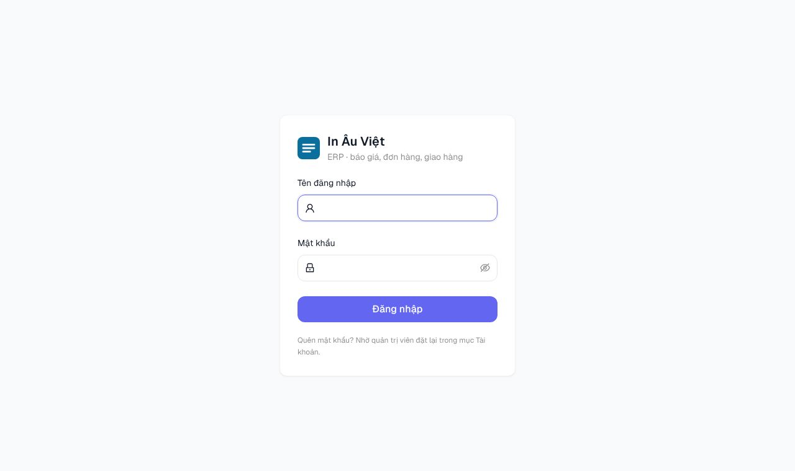
Đổi mật khẩu khi đang dùng
- Bấm vào tên của bạn ở đáy menu bên trái (trên điện thoại: góc trên bên phải).
- Chọn Đổi mật khẩu, nhập mật khẩu hiện tại và mật khẩu mới, bấm lưu.
Đăng xuất
Bấm tên của bạn ở đáy menu bên trái → Đăng xuất. Nên đăng xuất khi dùng máy tính chung. Phiên đăng nhập tự hết hạn nếu lâu ngày không dùng.
Chọn phân hệ và làm quen giao diện
Sau khi đăng nhập, bạn thấy màn hình chọn phân hệ. Bấm vào thẻ của phân hệ cần làm việc; bên trong chỉ có các menu của phân hệ đó.
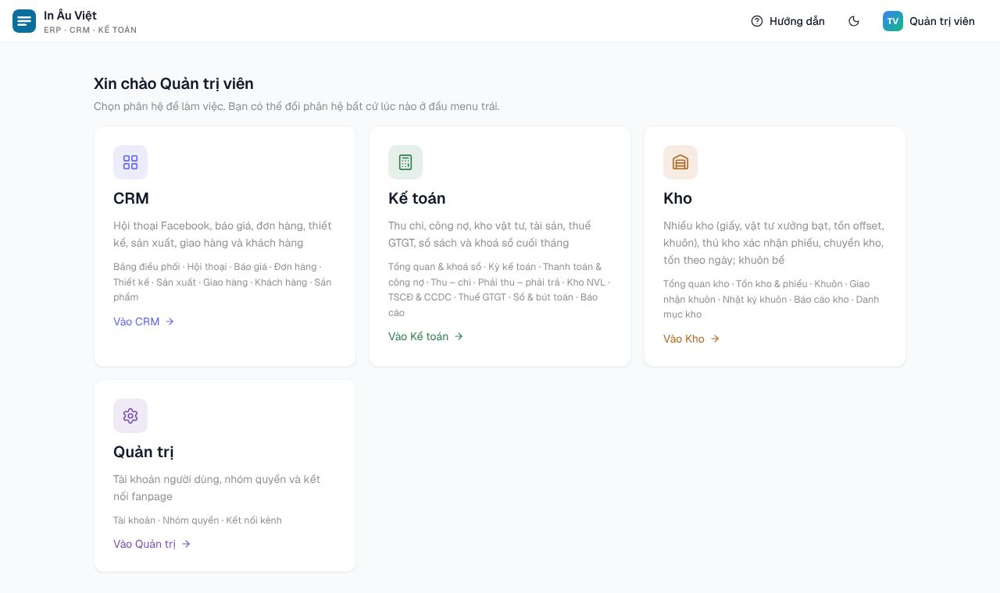
Các phần của màn hình
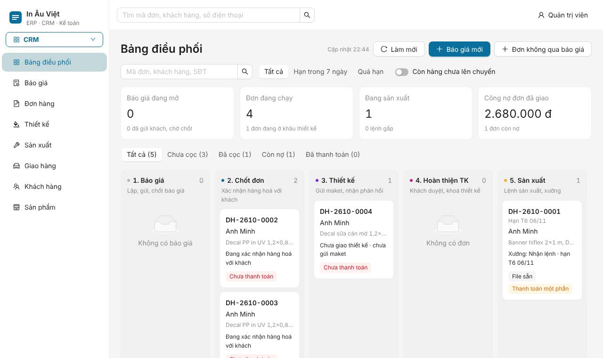
| Vị trí | Là gì |
|---|---|
| Góc trên bên trái | Tên công ty và nút đổi phân hệ (ví dụ CRM ▾). |
| Cột bên trái | Menu của phân hệ đang dùng. Menu đang mở được tô màu. |
| Thanh trên cùng | Trong CRM có ô tìm nhanh đơn theo mã đơn, tên khách, số điện thoại. Góc phải là tên bạn (đổi mật khẩu, chọn module, đăng xuất). |
| Phần giữa | Nội dung của menu đang chọn. |
Đổi sang phân hệ khác
- Bấm nút tên phân hệ ở đầu menu bên trái (ví dụ CRM ▾).
- Chọn phân hệ muốn chuyển tới, hoặc Màn hình chọn module để về màn hình ban đầu.
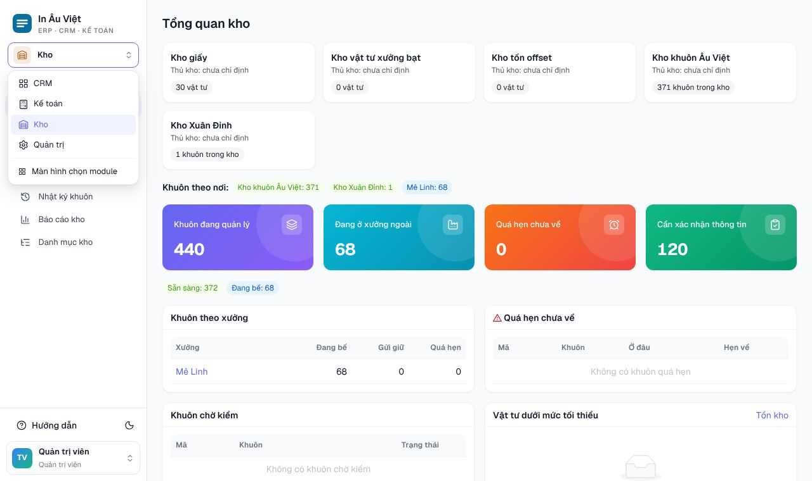
Cách khác: bấm tên bạn ở đáy menu bên trái → Chọn module.
Trên điện thoại
Phần mềm dùng được trên điện thoại. Menu bên trái được thu gọn vào nút ☰ ở góc trên bên trái; nút đổi phân hệ nằm ở đầu menu đó; nút Hướng dẫn và tên tài khoản ở góc trên bên phải. Trên máy tính không có thanh trên cùng: Hướng dẫn và tài khoản nằm ở đáy menu bên trái.
Giao diện sáng / tối
Bấm nút hình mặt trăng (cạnh nút Hướng dẫn) để chuyển sang giao diện tối, bấm nút mặt trời để quay lại giao diện sáng. Lựa chọn được nhớ trên máy đang dùng.
Quy trình 6 bước của một đơn hàng
Mọi đơn hàng đi qua 6 bước theo thứ tự. Trạng thái đơn do phần mềm tự chuyển khi bạn hoàn thành việc của từng bước, bạn không cần tự đổi trạng thái.
- Khách có file in sẵn: ở bước 2 chọn “Khách có file in sẵn”, đơn bỏ qua bước 3–4 và tạo lệnh sản xuất ngay.
- Thu tiền (cọc, thanh toán) ghi được ở bất kỳ bước nào và không làm đổi trạng thái đơn.
- Huỷ đơn được ở mọi bước trước khi khách ký nghiệm thu.
- Đơn không đi từ báo giá (khách gọi đặt luôn) thì tạo trực tiếp ở → Đơn mới, bắt đầu từ bước 2.
Phần kế toán nối vào đâu?
Kế toán không phải nhập lại những gì CRM đã có:
- Mỗi khoản thu tiền ghi ở CRM tự vào sổ thành phiếu thu.
- Khi khách ký nghiệm thu (cuối bước 6), doanh thu và công nợ của đơn tự ghi sổ, kèm thuế GTGT 8%.
- Kế toán chỉ nhập thêm những gì CRM không biết: tiền chi ra, nhập – xuất kho vật tư, tài sản, các bút toán khác.
Ai làm được gì
Mỗi tài khoản thuộc một nhóm quyền. Nhóm quyền quyết định bạn thấy phân hệ, menu và nút bấm nào. Nút bạn không có quyền sẽ bị ẩn hoặc hiện kèm lời nhắc.
| Nhóm (mặc định) | Làm được gì | Thấy giá tiền |
|---|---|---|
| Quản trị viên | Toàn quyền, kể cả tài khoản và nhóm quyền | Có |
| Kinh doanh | Trả lời hội thoại Facebook, báo giá, chốt và xác nhận đơn, giao thiết kế, lên chuyến giao, nghiệm thu, thu tiền, khách hàng | Có |
| Kế toán | Thu tiền, huỷ khoản thu, công nợ; toàn bộ phân hệ Kế toán gồm khoá sổ | Có |
| Thiết kế | Gửi maket, ghi phản hồi và duyệt của khách, khoá thiết kế | Không |
| Sản xuất | Xem lệnh sản xuất, chuyển công đoạn, đổi hạn xưởng và ưu tiên | Không |
| Giao hàng | Xem lịch giao, xác nhận đã giao | Không |
| Thủ kho | Phân hệ Kho: lập phiếu nhập / xuất, luân chuyển khuôn, giao nhận khuôn | Không |
Quản trị viên có thể sửa các nhóm này hoặc tạo nhóm mới: xem Nhóm quyền.
Bảng điều phối
Trang chủ của CRM: nhìn một lần là biết mọi đơn đang ở bước nào, đơn nào sắp trễ, đơn nào còn nợ tiền.
Đọc bảng điều phối
- 4 ô số liệu ở trên: báo giá đang mở, đơn đang chạy, đang sản xuất (kèm số lệnh gấp), công nợ của đơn đã giao.
- 6 cột tương ứng 6 bước. Cột 1 là các báo giá đang mở; cột 6 có thêm các đơn đã hoàn tất trong 14 ngày gần nhất.
- Mỗi thẻ là một đơn: mã đơn, tên khách, hàng hoá, hạn giao và một dòng tiến độ (ví dụ “maket v2 · chờ phản hồi”, “Xưởng: In · hạn 06/11”). Nhãn Gấp, File sẵn, tình trạng tiền hiện ở cuối thẻ.
- Bấm vào thẻ để mở chi tiết đơn hoặc báo giá.
Lọc nhanh
- Ô tìm kiếm: gõ mã đơn, tên khách hoặc số điện thoại.
- Hạn trong 7 ngày, Quá hạn: chỉ hiện đơn sắp tới hạn hoặc đã trễ.
- Công tắc Còn hàng chưa lên chuyến: đơn còn hàng chưa xếp chuyến giao.
- Thẻ tiền Chưa cọc Đã cọc Còn nợ Đã thanh toán (chỉ hiện với người được xem tiền).
Nút Báo giá mới và Đơn không qua báo giá ở góc phải giúp tạo mới ngay từ bảng điều phối.
Danh mục sản phẩm
Danh sách sản phẩm và đơn giá dùng khi lập báo giá. Chuẩn bị danh mục trước giúp báo giá nhanh và giá đồng nhất.
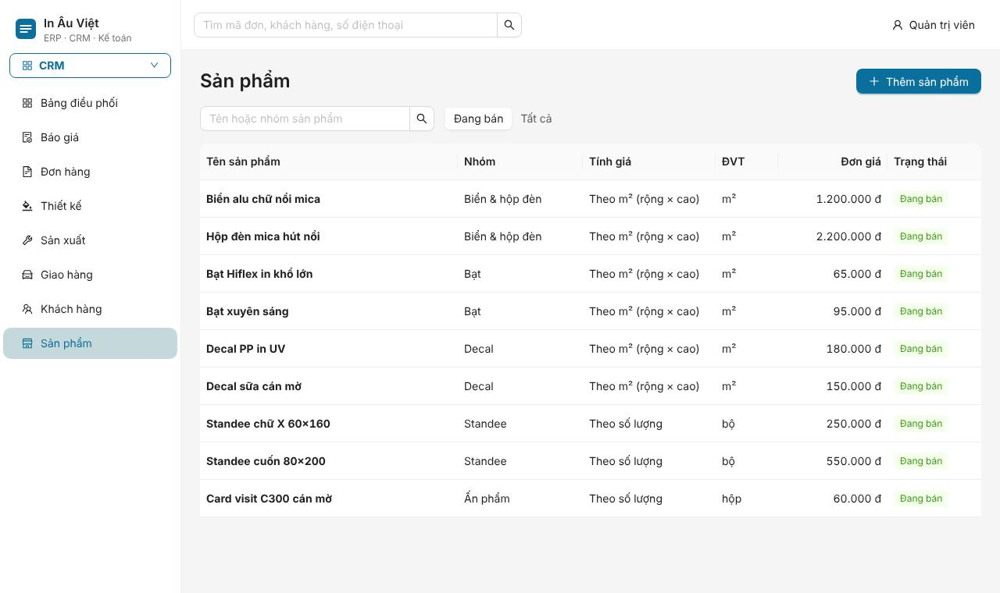
Hai cách tính giá
| Cách tính | Dùng cho | Khi báo giá |
|---|---|---|
| Theo m² (rộng × cao) | Decal, bạt, biển, hộp đèn… | Nhập rộng và cao (mét). Giá 1 tấm = rộng × cao × đơn giá/m², làm tròn tới đồng; thành tiền = giá tấm × số tấm. |
| Theo số lượng | Standee, card visit… | Nhập số lượng. Thành tiền = số lượng × đơn giá. |
Thêm hoặc sửa sản phẩm
- Bấm Thêm sản phẩm (hoặc biểu tượng sửa ở dòng sản phẩm).
- Nhập Tên sản phẩm, Nhóm (Decal, Bạt, Biển & hộp đèn…), chọn Cách tính giá.
- Với cách tính theo số lượng, nhập Đơn vị tính (cái, bộ, hộp…). Nhập Đơn giá (chưa gồm VAT).
- Bấm Lưu.
Khách hàng
Danh bạ khách hàng kèm toàn bộ báo giá, đơn hàng, công nợ và tài liệu của từng khách.

Thêm khách hàng mới
- Bấm Thêm khách hàng.
- Nhập Tên và Số điện thoại (bắt buộc). Có thể thêm công ty, mã số thuế, địa chỉ giao hàng mặc định, ghi chú.
- Bấm lưu. Khách được cấp mã tự động dạng
KH-0001.
Bạn cũng có thể thêm khách ngay khi lập báo giá hoặc đơn hàng, trong ô chọn khách hàng.
Hồ sơ khách hàng
Bấm vào tên khách để mở hồ sơ:

- Thông tin liên hệ, số đơn đang mở, tổng giá trị đơn, số tiền còn nợ.
- Nút Đơn mới và lập báo giá cho khách này.
- Báo giá, đơn hàng & tài liệu: mỗi báo giá / đơn một dòng, kèm các file PDF xem hoặc tải riêng; nút tải cả bộ của từng đơn.
- Chọn Loại tài liệu cần tải (Báo giá, Đơn hàng, Thiết kế, Lệnh SX, Giao hàng, Hoá đơn) rồi tải toàn bộ thành một file .zip, mỗi đơn một thư mục.
Hội thoại Facebook
Tin nhắn Messenger gửi tới fanpage và bình luận dưới bài viết hiện ở đây. Bạn trả lời ngay trong CRM, không cần mở Facebook.
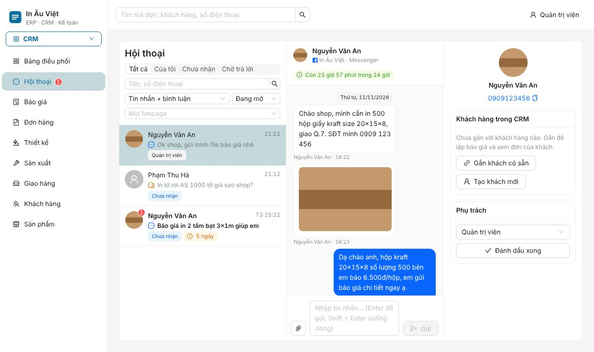
Biết có tin mới
- Menu Hội thoại hiện số hội thoại có tin chưa đọc; tiêu đề tab trình duyệt cũng hiện số này.
- Khi khách nhắn, máy phát một tiếng chuông ngắn và danh sách tự cập nhật, không cần tải lại trang.
- Biểu tượng bong bóng xanh là tin nhắn Messenger, bong bóng cam là bình luận.
Lọc danh sách
- Tất cả, Của tôi (giao cho bạn), Chưa nhận (chưa ai phụ trách), Chờ trả lời (khách nhắn sau cùng).
- Tìm theo tên hoặc số điện thoại; chọn chỉ Tin nhắn hoặc chỉ Bình luận; xem lại hội thoại Đã xong.
Trả lời tin nhắn
- Bấm vào hội thoại. Tin của khách bên trái, tin của trang bên phải (kèm tên nhân viên gửi).
- Gõ nội dung, nhấn Enter để gửi (Shift + Enter để xuống dòng).
- Gửi ảnh hoặc tệp (PDF báo giá, maket…): bấm nút kẹp giấy, chọn tệp tối đa 25 MB.
Hội thoại chưa ai nhận sẽ tự giao cho người trả lời đầu tiên. Khách cũ nhắn lại thì về người đã phụ trách họ lần trước.
Tin gửi lỗi hiện nền đỏ kèm lý do (ví dụ khách đã chặn trang). Tin ghi Gửi từ Facebook là tin ai đó trả lời trực tiếp trên Facebook / Meta Business Suite; CRM vẫn lưu để lịch sử đủ, nhưng nên trả lời trong CRM để biết ai đã nhắn.
Trả lời bình luận
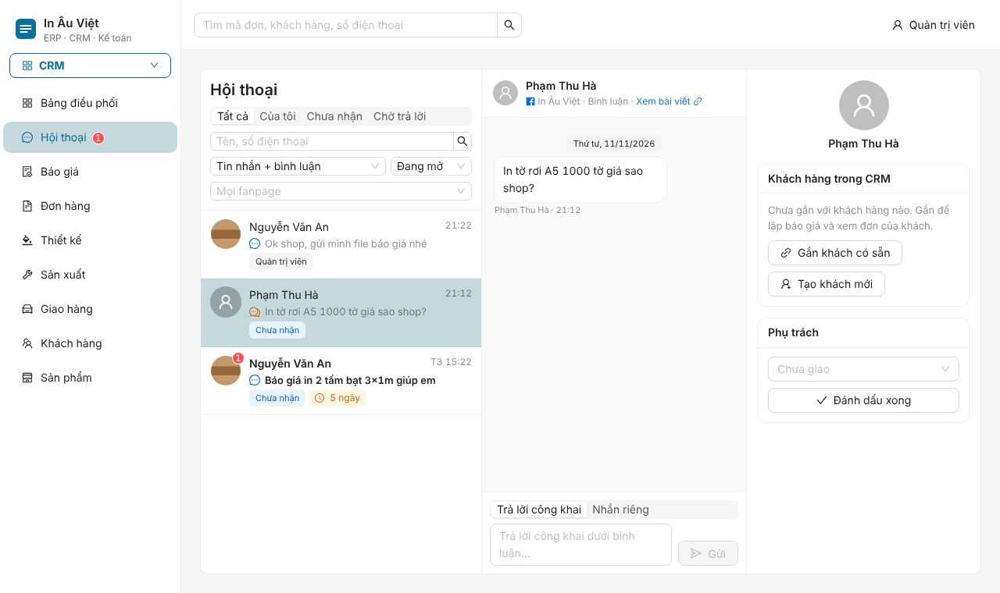
- Trả lời công khai: câu trả lời hiện ngay dưới bình luận mới nhất của khách. Bấm Xem bài viết để mở bài trên Facebook.
- Nhắn riêng: gửi một tin Messenger cho người bình luận. Facebook chỉ cho một lần và trong 7 ngày kể từ bình luận. Khách trả lời tin riêng thì cuộc trò chuyện hiện thành hội thoại Messenger mới.
Gắn khách hàng và lập báo giá
- Khách nhắn số điện thoại thì CRM tự nhận ra và hiện ở cột phải.
- Bấm Gắn khách có sẵn (gõ tên hoặc số để tìm) hoặc Tạo khách mới (tên và số điện thoại điền sẵn).
- Đã gắn khách thì bấm Lập báo giá: báo giá mới mở sẵn khách này.
Phân công và kết thúc
- Người có quyền phân công chọn người trong ô Phụ trách. Nhân viên kinh doanh bấm Nhận hội thoại để nhận hội thoại chưa ai nhận.
- Nhân viên chỉ thấy hội thoại của mình và hội thoại chưa ai nhận; quản trị viên và người có quyền “Xem tất cả” thấy hết.
- Xong việc bấm Đánh dấu xong. Khách nhắn lại thì hội thoại tự mở lại.
Báo giá
Lập báo giá cho khách, gửi đi, theo dõi khách chốt hay không. Khách chốt thì báo giá thành đơn hàng chỉ với một nút bấm.

Trạng thái của báo giá
| Trạng thái | Nghĩa là |
|---|---|
| Nháp | Mới lập, chưa gửi khách. Sửa thoải mái. |
| Đã gửi khách | Đã gửi, đang chờ khách trả lời. Vẫn sửa được. |
| Đã chốt | Khách đồng ý, đã thành đơn hàng. Không sửa nữa (sửa ở đơn hàng). |
| Khách không lấy | Khách từ chối. Mở lại được khi khách quay lại. |
Báo giá quá ngày hiệu lực có nhãn Hết hiệu lực.
Lập báo giá mới
- Bấm Lập báo giá (hoặc Báo giá mới ở bảng điều phối).
- Khách hàng: gõ tên hoặc số điện thoại để chọn; khách mới thì thêm ngay trong ô này.
- Nội dung báo giá: mô tả ngắn, ví dụ “Biển hiệu mặt tiền + decal kính”. Hiệu lực: số ngày (mặc định 7).
- Hạng mục: chọn sản phẩm từ danh mục hoặc gõ tên hạng mục tự do.
- Sản phẩm tính theo m²: nhập rộng × cao (mét) và số tấm; phần mềm tự tính diện tích và giá.
- Sản phẩm tính theo số lượng: nhập số lượng.
- Có thể sửa đơn giá ở từng dòng nếu báo giá riêng cho khách.
- Ghi chú in trên báo giá (ví dụ “Đã gồm lắp đặt nội thành”), rồi bấm Lưu báo giá.

Gửi, theo dõi và chốt

- Bấm In báo giá để mở hoặc tải PDF gửi khách (qua Zalo, email…).
- Gửi xong, bấm Đã gửi khách để đánh dấu.
- Khách đồng ý: bấm Khách chốt → tạo đơn, nhập hạn giao và ghi chú đơn (để trống thì dùng ghi chú của báo giá), bấm Tạo đơn hàng. Đơn được tạo với đúng các hạng mục của báo giá.
- Khách từ chối: bấm Khách không lấy và ghi lý do. Sau này khách quay lại thì bấm Mở lại báo giá.
Đơn hàng và chốt đơn
Mọi việc của một đơn đều nằm trên trang chi tiết đơn: thanh 6 bước ở trên, thông tin, hàng hoá, chuyến giao, thanh toán và lịch sử ở dưới.
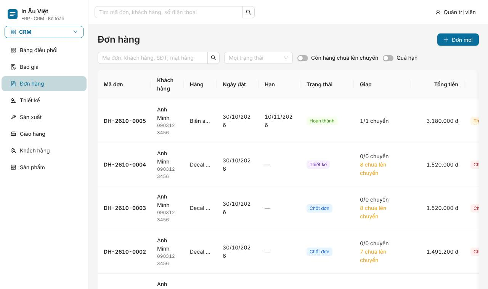
Trang chi tiết đơn

- Hàng nút trên cùng: In / tải tài liệu, Thêm chuyến giao, Ghi nhận thanh toán, Khác (sửa ngày & ghi chú, sửa hàng hoá, huỷ đơn).
- Thanh 6 bước: bước đang làm được tô đậm. Bấm vào một bước đã qua để xem lại việc của bước đó.
- Phía dưới: thông tin đơn, ô Tiền (tổng / đã nhận / còn lại) và các thẻ Giao hàng, Hàng hoá, Thanh toán, Lịch sử.
Bước 2: xác nhận đơn
Sau khi khách chốt, kinh doanh xác nhận lại hàng hoá với khách rồi chọn hướng đi của đơn.
- Kiểm tra khung so sánh với báo giá. Nếu khách đổi sản phẩm, kích thước hay số lượng, bấm Khác → Sửa hàng hoá. Không cần ai duyệt; mọi thay đổi đều được ghi lại và hiện chênh lệch so với báo giá.
- Chọn Cần thiết kế (bước 3–4) hoặc Khách có file in sẵn → sản xuất luôn.
- Bấm Xác nhận đơn. Đơn chuyển sang Thiết kế, hoặc tạo lệnh sản xuất ngay nếu khách có file sẵn.
Tạo đơn không qua báo giá
Dùng khi khách đặt luôn, không cần báo giá.
- Vào → Đơn mới (hoặc Đơn không qua báo giá ở bảng điều phối).
- Chọn khách, ngày đặt, hạn giao, ghi chú.
- Hàng hoá: mỗi dòng gồm mặt hàng, quy cách (chất liệu, gia công), số lượng, đơn giá (không bắt buộc).
- Kế hoạch giao hàng (có thể thêm sau): ngày giao, địa chỉ, số lượng từng mặt hàng mỗi chuyến.
- Tiền cọc: tích “Khách đã cọc”, nhập số tiền và hình thức nếu có. Bấm lưu.
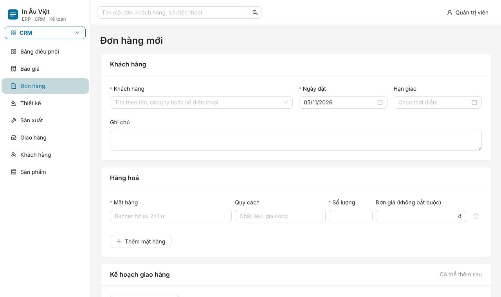
Sửa và huỷ đơn
- Khác → Sửa ngày & ghi chú: đổi hạn giao, ghi chú.
- Khác → Sửa hàng hoá: đổi, thêm, bỏ hạng mục. Không giảm số lượng xuống dưới số đã xếp chuyến giao.
- Khác → Huỷ đơn: phải ghi lý do. Các chuyến chưa giao cũng bị huỷ; khoản đã thu vẫn giữ trong lịch sử.
Thiết kế và hoàn thiện thiết kế
Người thiết kế gửi maket cho khách, ghi lại khách muốn sửa gì, đến khi khách duyệt. Sau đó hoàn thiện file in và khoá thiết kế để xưởng sản xuất.
Màn hình Việc thiết kế

- Các thẻ: Chưa gửi · Chờ khách · Cần sửa · Hoàn thiện.
- Bật Chỉ việc của tôi để chỉ thấy đơn được giao cho mình.
- Bấm vào đơn để làm việc trên trang chi tiết đơn.
Bước 3: gửi maket và ghi phản hồi
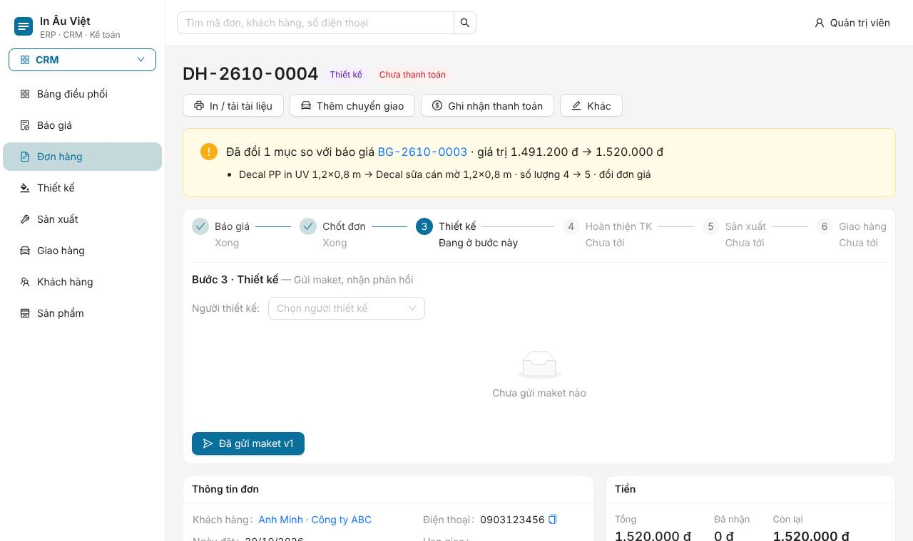
- Giao người thiết kế (kinh doanh hoặc trưởng nhóm): chọn ở ô Người thiết kế.
- Thiết kế xong, gửi maket cho khách (Zalo, email…), rồi bấm Đã gửi maket v1 và ghi nội dung / kênh gửi.
- Khách muốn sửa: bấm Khách yêu cầu sửa v1, ghi khách muốn sửa gì. Sửa xong gửi lại và bấm Đã gửi maket v2… cứ thế tới khi khách đồng ý.
- Khách đồng ý: bấm Khách duyệt vN, chọn kênh duyệt (Zalo, Email, Trực tiếp…) và tên người duyệt bên khách, bấm Xác nhận duyệt. Đơn sang bước 4.
Bước 4: hoàn thiện và khoá thiết kế
- Hoàn thiện file in đúng bản khách duyệt, rồi tích File in đã hoàn thiện đúng theo bản khách duyệt.
- Bấm Khoá thiết kế → tạo lệnh sản xuất. Phần mềm tạo lệnh sản xuất (mã
LSX-YYMM-NNNN) và đơn sang bước 5.
Khách đổi ý sau khi đã duyệt? Bấm Khách đổi ý, sửa tiếp: bản đã duyệt chuyển thành “khách yêu cầu sửa” và đơn quay lại bước 3.
Nút In phiếu duyệt thiết kế tạo phiếu ghi bản duyệt, kênh và người duyệt.
Sản xuất
Xưởng theo dõi các lệnh sản xuất trên một bảng theo công đoạn và bấm chuyển công đoạn khi làm xong.

Công đoạn
Mỗi lệnh đi qua: Nhận lệnh → In → Gia công → Kiểm tra → Xong.
- Thẻ lệnh ghi mã lệnh, khách, hàng cần làm, quy cách, in theo maket nào, hạn xưởng, nhãn GẤP và Trễ. Màn hình xưởng không hiện giá tiền.
- Bấm → In, → Gia công… trên thẻ để chuyển sang công đoạn tiếp theo.
- Ở công đoạn Xong, bấm Chuyển giao hàng để báo hàng đã sẵn sàng giao. Đơn sang bước 6.
- Biểu tượng in trên thẻ để xem / in lệnh sản xuất.
Trên trang chi tiết đơn
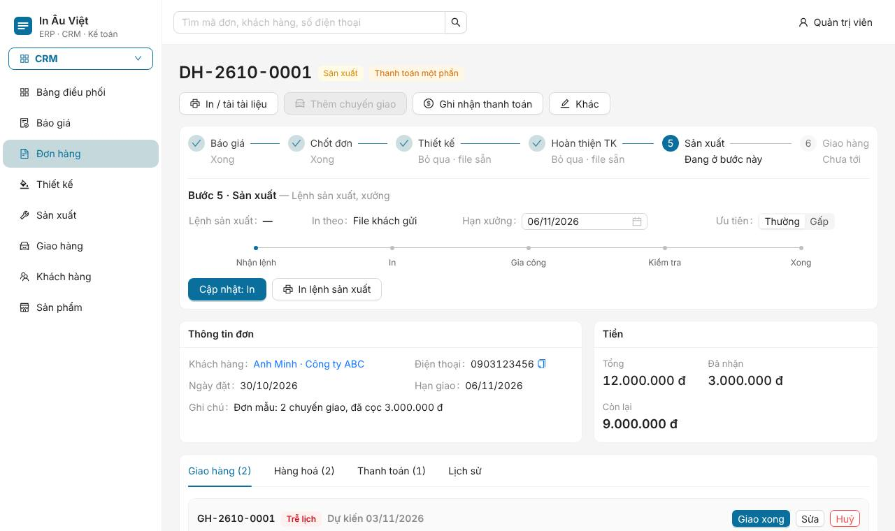
- Hạn xưởng: mặc định bằng hạn giao của đơn (hoặc 3 ngày nếu đơn chưa có hạn). Đổi được.
- Ưu tiên: Thường / Gấp. Lệnh gấp hiện nổi bật trên bảng sản xuất.
- Nút Cập nhật: … chuyển công đoạn tiếp theo (chỉ nhóm Sản xuất).
Giao hàng và nghiệm thu
Một đơn có thể giao một hoặc nhiều chuyến. Giao đủ hàng thì khách ký biên bản nghiệm thu và đơn hoàn tất.
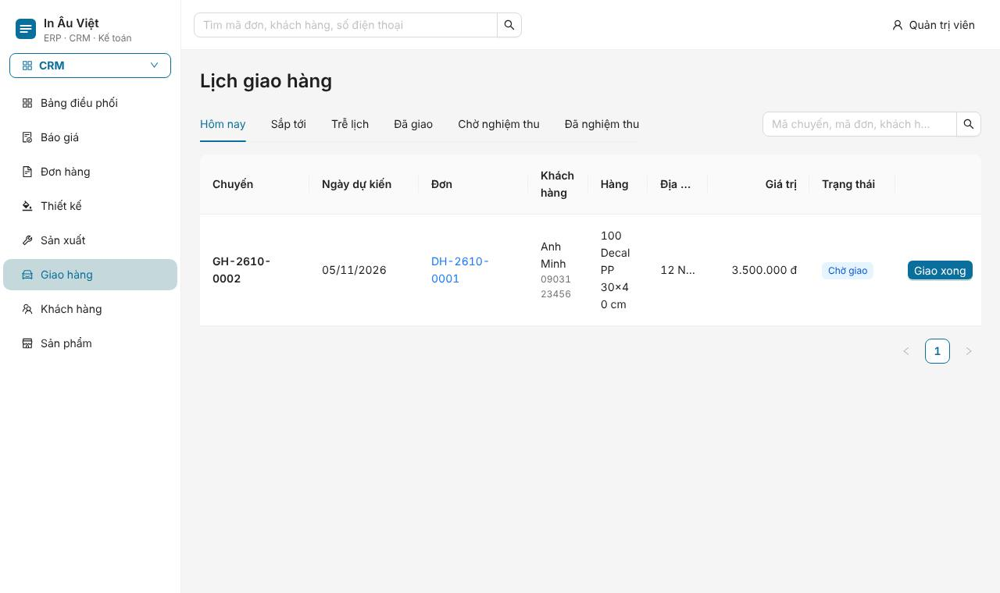
Các thẻ trên màn hình Giao hàng
| Thẻ | Hiện gì |
|---|---|
| Hôm nay / Sắp tới / Trễ lịch | Chuyến chờ giao theo ngày dự kiến (mã chuyến GH-YYMM-NNNN). |
| Đã giao | Chuyến đã giao xong. |
| Chờ nghiệm thu | Đơn đã giao đủ, chờ khách ký. |
| Đã nghiệm thu | Đơn khách đã ký biên bản. |
Xếp chuyến giao
- Trên trang chi tiết đơn, bấm Thêm chuyến giao.
- Chọn Ngày giao dự kiến, Địa chỉ giao.
- Nhập số lượng chuyến này cho từng mặt hàng (phần mềm hiện số còn có thể lên chuyến). Ghi chú cho tài xế nếu cần. Bấm Lưu chuyến.
Xác nhận đã giao
- Bấm Giao xong ở chuyến (trên màn hình Giao hàng hoặc thẻ Giao hàng của đơn).
- Kiểm tra cột Thực giao từng mặt hàng. Giao thiếu thì sửa số thực giao: phần thiếu tự quay về “chưa lên chuyến” để xếp chuyến khác.
- Ghi thời gian giao, người nhận.
- Nếu thu tiền tại chỗ, tích Thu tiền trong chuyến này, nhập số tiền và hình thức.
- Bấm Xác nhận đã giao.
Giao nhầm? Bấm Mở lại ở chuyến đã giao để đưa về “Chờ giao”. Chuyến chưa giao thì Sửa hoặc Huỷ được.
Khách ký nghiệm thu
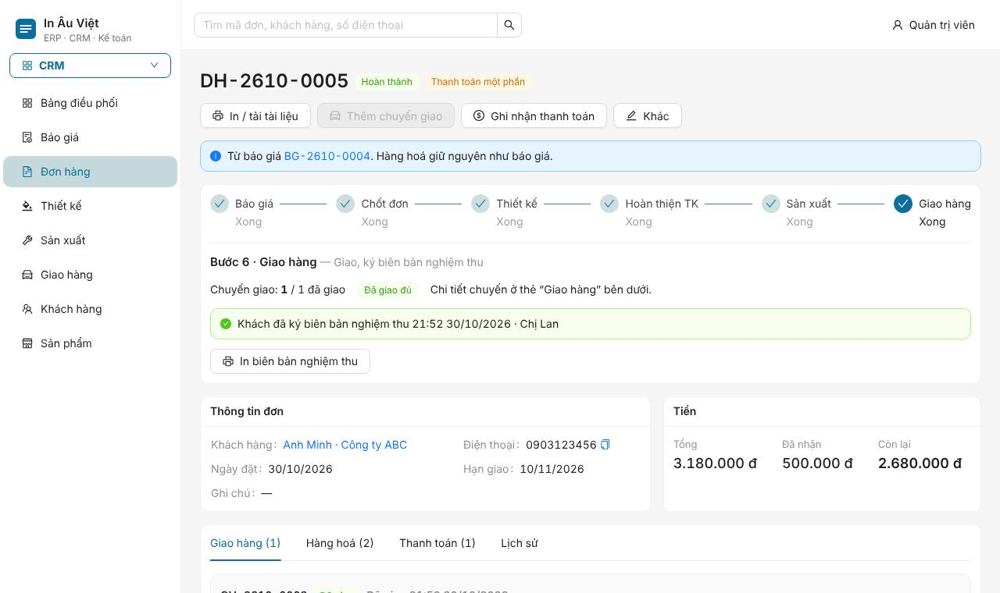
- Bấm In biên bản để in biên bản nghiệm thu và bàn giao cho khách ký.
- Khách ký xong, bấm Khách đã ký (hoặc Khách đã ký nghiệm thu trên đơn), nhập người ký bên khách và ghi chú.
- Đơn chuyển sang Hoàn thành. Doanh thu và công nợ của đơn tự vào sổ kế toán.
Thanh toán và công nợ
Ghi nhận tiền khách trả (cọc hoặc thanh toán) và xem ai còn nợ. Mỗi khoản thu tự vào sổ kế toán.

Đọc màn hình
- 4 ô số liệu: đã thu tháng này, công nợ đơn đã giao (cần thu ngay), còn phải thu đơn chưa giao, tiền cọc đang giữ.
- Công nợ: các đơn còn nợ, đơn đã giao xếp trước. Bật “Chỉ đơn đã giao hàng” để tập trung đòi tiền.
- Khoản thu: mọi khoản đã thu, lọc theo khoảng ngày, hình thức, hiện cả khoản đã huỷ; có tổng tiền theo bộ lọc.
Ghi nhận một khoản thu
- Bấm Thu ở dòng đơn trong bảng Công nợ, hoặc Ghi nhận thanh toán trên trang chi tiết đơn.
- Nhập Số tiền, chọn Hình thức (Tiền mặt / Chuyển khoản / Khác) và Ngày nhận.
- Nếu là tiền cọc, tích Đây là tiền cọc. Nếu thu trong một chuyến giao, chọn chuyến đó.
- Bấm Lưu.
Ghi nhầm thì sao?
Mở đơn → thẻ Thanh toán → bấm Huỷ ở khoản đó và ghi lý do. Khoản bị huỷ vẫn hiện trong lịch sử (gạch ngang) nhưng không còn tính vào số đã nhận. Khoản thu không bao giờ bị xoá hẳn.
Biểu tượng tải ở cuối dòng công nợ để tải hoá đơn bán hàng (nội bộ).
In và tải chứng từ PDF
Phần mềm tạo sẵn 6 loại chứng từ PDF. Chứng từ chỉ có khi đơn đã tới bước tương ứng.
| Chứng từ | Có từ khi |
|---|---|
| Báo giá | Lập báo giá |
| Đơn đặt hàng | Có đơn hàng (bước 2) |
| Phiếu duyệt thiết kế | Khách duyệt maket (bước 3–4) |
| Lệnh sản xuất | Khoá thiết kế (bước 5) |
| Biên bản nghiệm thu và bàn giao | Giao đủ hàng (bước 6) |
| Hoá đơn bán hàng (nội bộ) | Đơn có giá |
Ba cách tải
- Từ danh sách: biểu tượng tải ở cuối mỗi dòng báo giá / đơn hàng / công nợ — không cần mở chi tiết.
- Trên trang chi tiết đơn: nút In / tải tài liệu → chọn từng chứng từ, hoặc Tải cả bộ (.zip).
- Trong hồ sơ khách hàng: tải riêng từng file, cả bộ từng đơn, hoặc chọn loại tài liệu rồi tải toàn bộ.
Phân hệ Kế toán hoạt động thế nào
Đây là sổ kế toán nội bộ theo Thông tư 133. Phần lớn bút toán được ghi tự động; kế toán chủ yếu nhập chứng từ chi, kho, tài sản và khoá sổ mỗi cuối tháng.
Ba khái niệm cần nắm
1. Kỳ kế toán = một tháng
Sổ chia theo tháng (ví dụ kỳ 10/2026). Mỗi kỳ ở trạng thái Đang mở (được ghi chứng từ) hoặc Đã khoá sổ (chỉ xem). Cuối tháng kế toán chạy 5 bước rồi khoá sổ; số dư tự chuyển sang tháng sau.
Mọi màn hình kế toán có ô chọn kỳ ở cạnh tiêu đề. Mặc định là kỳ đang mở sớm nhất (kỳ cần khoá tiếp theo).
2. Những gì tự ghi sổ
| Việc xảy ra | Phần mềm tự ghi |
|---|---|
| Thu tiền khách ở CRM | Phiếu thu PT: tiền vào 111/112, giảm công nợ 131 |
| Huỷ khoản thu | Xoá phiếu thu (kỳ đang mở) hoặc ghi bút toán đảo (kỳ đã khoá) |
| Khách ký nghiệm thu | Doanh thu DT: công nợ 131 = tổng đơn + 8% VAT; doanh thu 511; thuế đầu ra 33311 |
| Kế toán lập phiếu nhập, xuất, chi, mua tài sản | Bút toán tương ứng (xem từng mục) |
| Chạy 5 bước cuối kỳ | Giá vốn, khấu hao, phân bổ, khấu trừ thuế, kết chuyển lãi lỗ |
3. Tài khoản thường gặp
| TK | Tên | TK | Tên |
|---|---|---|---|
| 111 | Tiền mặt | 331 | Phải trả nhà cung cấp |
| 112 | Tiền gửi ngân hàng | 33311 | Thuế GTGT đầu ra |
| 131 | Phải thu khách hàng | 411 | Vốn chủ sở hữu |
| 1331 | Thuế GTGT đầu vào được khấu trừ | 421 | Lợi nhuận chưa phân phối |
| 152 | Nguyên vật liệu | 511 | Doanh thu |
| 154 | Chi phí sản xuất dở dang | 632 | Giá vốn hàng bán |
| 211 / 214 | Tài sản cố định / Hao mòn | 6421 | Chi phí bán hàng |
| 242 | Chi phí trả trước (công cụ dụng cụ) | 6422 | Chi phí quản lý doanh nghiệp |
Lịch làm việc của kế toán
| Khi nào | Việc | Mục hướng dẫn |
|---|---|---|
| Một lần duy nhất | Chọn tháng bắt đầu, nhập số dư và tồn kho đầu kỳ | Bắt đầu ghi sổ |
| Hằng ngày | Phiếu chi, phiếu nhập, phiếu xuất cho đơn | Thu – chi, Kho NVL |
| Khi mua tài sản | Thêm TSCĐ / CCDC | TSCĐ & CCDC |
| Đầu tháng sau | Chạy 5 bước, khoá sổ tháng trước | Khoá sổ cuối tháng |
| Bất cứ lúc nào | Xem công nợ, thuế, sổ sách, báo cáo | Báo cáo & sổ sách |
Bắt đầu ghi sổ
Việc làm một lần khi mới dùng: chọn tháng đầu tiên ghi sổ, nhập số dư các tài khoản và tồn kho vật tư tại ngày đầu tháng đó.
- Số dư cuối tháng trước của các tài khoản, lấy từ sổ cũ (tiền mặt, ngân hàng, công nợ, tài sản, vốn…).
- Biên bản kiểm kê kho: số lượng và đơn giá từng vật tư.
- Danh sách tài sản cố định và công cụ dụng cụ đang dùng.
Bước 1: Chọn tháng bắt đầu
- Vào phân hệ → . Khi chưa có sổ, màn hình hiện “Sổ sách chưa bắt đầu”.
- Chọn tháng ở ô chọn tháng, bấm Bắt đầu ghi sổ.
Bước 2: Danh mục vật tư và nhà cung cấp
Vào → thẻ Danh mục vật tư và Nhà cung cấp để thêm hoặc sửa (phần mềm có sẵn dữ liệu mẫu). Xem chi tiết ở mục Kho NVL.
Bước 3: Tồn kho đầu kỳ
- Vào → thẻ Tồn kho đầu kỳ.
- Nhập số lượng và đơn giá từng vật tư theo kiểm kê.
- Bấm Lưu tồn kho đầu kỳ. Tổng giá trị tự thành số dư đầu kỳ của tài khoản 152.
Bước 4: Số dư đầu kỳ các tài khoản
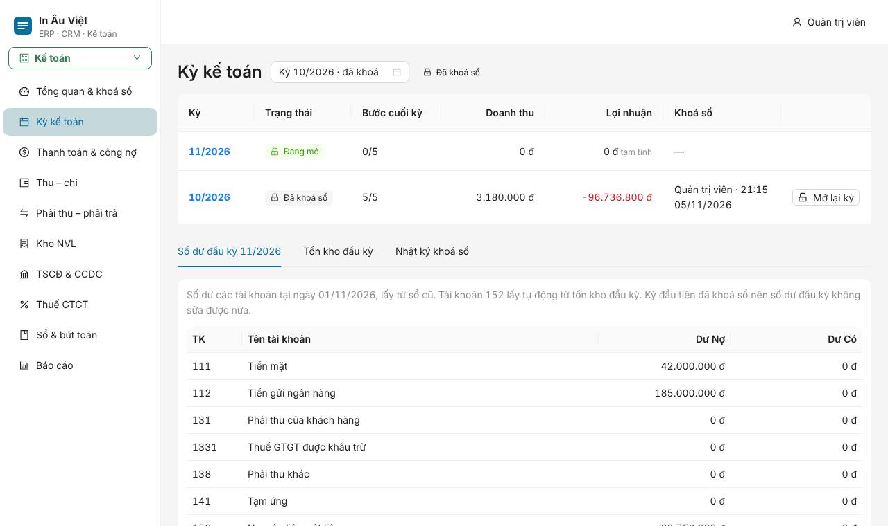
- Vào → thẻ Số dư đầu kỳ.
- Nhập số dư từng tài khoản vào cột Dư Nợ hoặc Dư Có (tài khoản 152 tự lấy từ tồn kho).
- Kiểm tra dòng Tổng: tổng Dư Nợ phải bằng tổng Dư Có. Nếu lệch, phần mềm báo số tiền lệch.
- Bấm Lưu số dư đầu kỳ.
Bước 5: Tài sản đang có
Vào → Thêm tài sản, tắt “Mua trong kỳ” cho các tài sản đã có từ trước. Xem mục TSCĐ & CCDC.
Tổng quan & khoá sổ
Trang chủ của kế toán: số dư quan trọng, lãi lỗ tạm tính của tháng và danh sách 5 bước khoá sổ.

- 6 ô số liệu: tiền mặt (111), ngân hàng (112), phải thu khách (131), phải trả nhà cung cấp (331), tồn kho vật tư (152), lợi nhuận của kỳ. Kỳ chưa khoá thì lợi nhuận ghi “tạm tính”.
- Khoá sổ cuối kỳ: 5 bước với nút Chạy, kèm số liệu từng bước. Xem Khoá sổ cuối tháng.
- Đơn đang sản xuất chưa có phiếu xuất kho: nhắc lập phiếu xuất vật tư cho đơn, nếu không giá vốn của đơn sẽ bằng 0 khi nghiệm thu. Bấm Lập phiếu xuất để sang Kho NVL.
Số âm ở ô Phải thu khách nghĩa là khách đã trả trước (tiền cọc) nhiều hơn số đã nghiệm thu.
Thu – chi và phiếu chi
Sổ quỹ tiền mặt và ngân hàng, cùng nơi lập phiếu chi cho mọi khoản tiền ra: chi phí hoặc trả nợ nhà cung cấp.
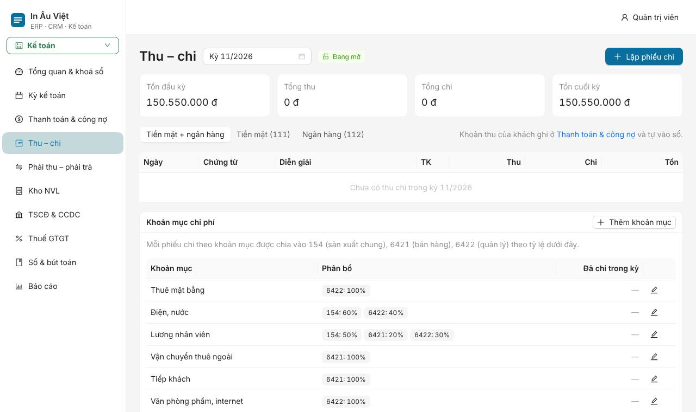
Xem sổ quỹ
- Chọn Tiền mặt + ngân hàng, Tiền mặt (111) hoặc Ngân hàng (112).
- Mỗi dòng có ngày, số chứng từ, diễn giải, thu, chi và số tồn sau dòng đó.
- Khoản thu của khách tự hiện ở đây (ghi từ Thanh toán & công nợ), không phải nhập lại.
Lập phiếu chi
- Bấm Lập phiếu chi (chỉ có ở kỳ đang mở).
- Chọn loại: Chi phí hoặc Trả nợ nhà cung cấp.
- Chọn ngày chi (phải trong kỳ đang mở) và chi bằng Tiền mặt hay Chuyển khoản.
- Chi phí: chọn khoản mục (thuê mặt bằng, điện nước, lương…). Trả nợ: chọn nhà cung cấp.
- Ghi diễn giải, số tiền (chi phí: số tiền trước thuế, chọn thuế GTGT nếu có hoá đơn). Bấm Ghi phiếu chi.

Phiếu chi được đánh số tự động PC-YYMM-NNNN.
Khoản mục chi phí
Mỗi khoản mục quy định chi phí được chia vào đâu: 154 (chi phí sản xuất chung — sau này vào giá vốn), 6421 (bán hàng), 6422 (quản lý). Ví dụ “Điện, nước”: 60% vào 154, 40% vào 6422.
- Bảng khoản mục ở cuối trang Thu – chi, kèm số đã chi trong kỳ.
- Kế toán trưởng bấm Thêm khoản mục hoặc biểu tượng sửa để đổi tỷ lệ. Tổng tỷ lệ phải bằng 100%.
- Khoản mục không dùng nữa thì tắt “Đang dùng”.
Kho nguyên vật liệu
Theo dõi nhập, xuất, tồn từng vật tư. Vật tư xuất cho đơn nào sẽ thành giá vốn của đơn đó khi khách nghiệm thu.

Các thẻ
- Tồn kho: số lượng và giá trị đầu kỳ, nhập, xuất, tồn cuối. Số tồn âm hiện màu đỏ.
- Phiếu nhập, Phiếu xuất: danh sách phiếu trong kỳ, có nút xoá ở kỳ đang mở.
- Danh mục vật tư, Nhà cung cấp: thêm, sửa, ngừng dùng.
Lập phiếu nhập kho (mua vật tư)
- Bấm Phiếu nhập.
- Chọn ngày nhập, nhà cung cấp, cách thanh toán: Tiền mặt (111), Chuyển khoản (112) hoặc Mua chịu (331) nếu chưa trả tiền.
- Chọn thuế GTGT theo hoá đơn (mặc định 8%).
- Thêm từng dòng vật tư: chọn vật tư, nhập số lượng và đơn giá (chưa thuế). Bấm Ghi phiếu nhập.
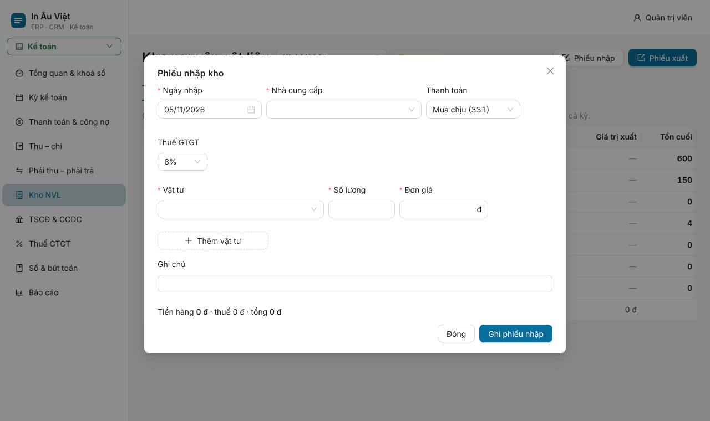
Mua chịu thì sau này trả tiền bằng phiếu chi → Trả nợ nhà cung cấp.
Lập phiếu xuất kho (xuất cho sản xuất)
- Bấm Phiếu xuất.
- Chọn ngày xuất và đơn hàng được xuất vật tư (gõ mã đơn hoặc tên khách). Vật tư dùng chung cho xưởng (keo, mực vệ sinh máy…) thì để trống ô đơn hàng.
- Chọn vật tư và số lượng. Danh sách hiện số tồn hiện có để bạn kiểm tra. Bấm Ghi phiếu xuất.

Giá xuất kho tính thế nào?
Phần mềm dùng giá bình quân cả tháng: (giá trị tồn đầu + giá trị nhập trong tháng) ÷ (số lượng tồn đầu + số lượng nhập). Trong tháng, phiếu xuất dùng giá tạm tính theo bình quân tới lúc xuất; cuối tháng, bước “Tính giá xuất kho” tính lại cho đúng.
Tài sản cố định và công cụ dụng cụ
Máy in, xe giao hàng (TSCĐ) được khấu hao hằng tháng; máy cán, máy tính (CCDC) được phân bổ dần. Phần mềm tự tính mỗi tháng khi khoá sổ.
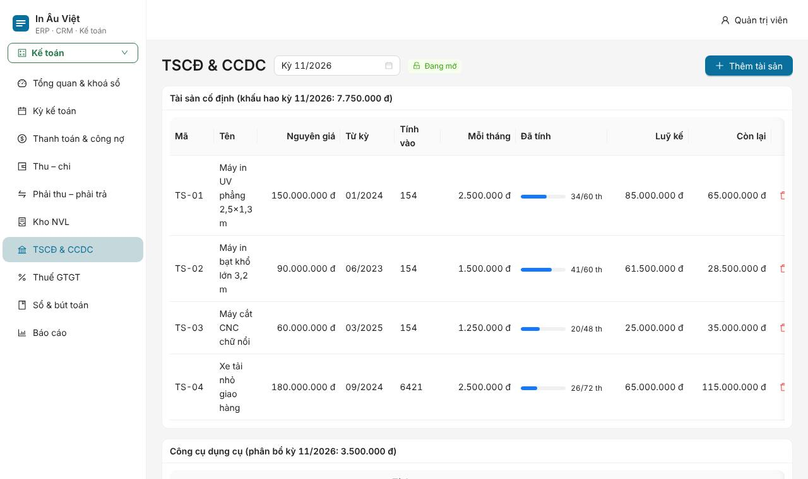
Thêm tài sản
- Bấm Thêm tài sản.
- Chọn Tài sản cố định hoặc Công cụ dụng cụ, nhập tên và nguyên giá (chưa thuế).
- Chọn kỳ bắt đầu khấu hao / phân bổ, số tháng, và tính vào chi phí nào: 154 (máy móc xưởng), 6421 (bán hàng, ví dụ xe giao hàng), 6422 (văn phòng).
-
Mua trong kỳ:
- Bật nếu vừa mua: nhập ngày mua, cách thanh toán, thuế GTGT, nhà cung cấp (bắt buộc khi mua chịu). Phần mềm ghi bút toán mua.
- Tắt nếu tài sản đã có trước khi bắt đầu sổ: nguyên giá và hao mòn đã nằm trong số dư đầu kỳ.
- Bấm Lưu. Tài sản được đánh mã
TS-01,CC-01…
Mỗi tháng trích đều nguyên giá ÷ số tháng; tháng cuối nhận phần lẻ cho tròn nguyên giá.
Sổ & bút toán
Nơi xem toàn bộ bút toán của kỳ (nhật ký chung), bảng cân đối số phát sinh, và ghi các bút toán khác ngoài các phiếu ở trên.
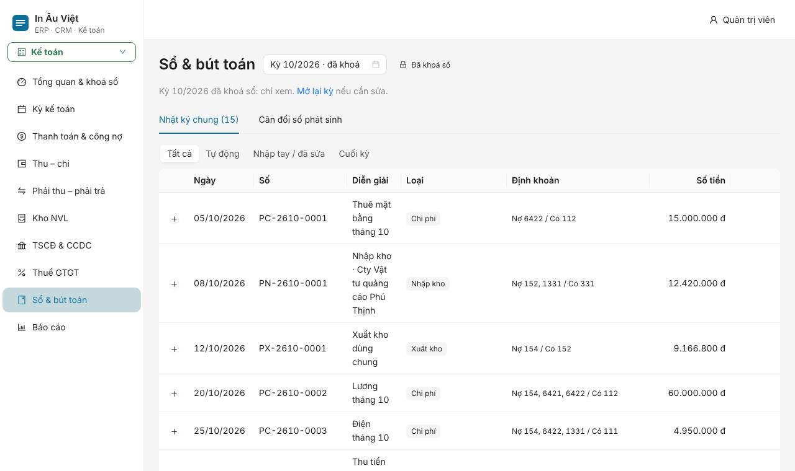
Nhật ký chung
- Lọc: Tất cả, Tự động, Nhập tay / đã sửa, Cuối kỳ.
- Cột Loại cho biết nguồn bút toán (Thu tiền, Doanh thu, Nhập kho, Chi phí, Khấu hao…). Nhãn đã sửa kèm lý do khi rê chuột.
- Dòng màu cam dưới diễn giải là ghi chú, ví dụ chứng từ thuộc tháng đã khoá nên được ghi vào tháng này.
Ghi bút toán khác (PKT)
Dùng cho nghiệp vụ không có phiếu riêng: góp vốn, vay, rút tiền ngân hàng về quỹ, điều chỉnh…
- Bấm Bút toán khác.
- Chọn ngày, ghi diễn giải.
- Mỗi dòng chọn tài khoản và nhập số tiền vào cột Nợ hoặc Có. Thêm dòng nếu cần.
- Tổng Nợ phải bằng tổng Có (phần mềm báo số lệch). Bấm Lưu.
Ví dụ rút 10.000.000 đ từ ngân hàng về quỹ: Nợ 111 10.000.000 / Có 112 10.000.000.
Sửa và xoá
- Bút toán nhập tay: sửa hoặc xoá tự do khi kỳ còn mở.
- Bút toán tự động (phiếu nhập, xuất, chi…): kế toán trưởng sửa được nhưng phải ghi lý do; bút toán gốc được giữ lại để đối chiếu. Xoá thì phiếu gốc cũng bị xoá.
- Không sửa / xoá được: bút toán từ CRM (thu tiền, doanh thu) và bút toán do 5 bước cuối kỳ tạo. Muốn điều chỉnh thì ghi bút toán khác.
Cân đối số phát sinh
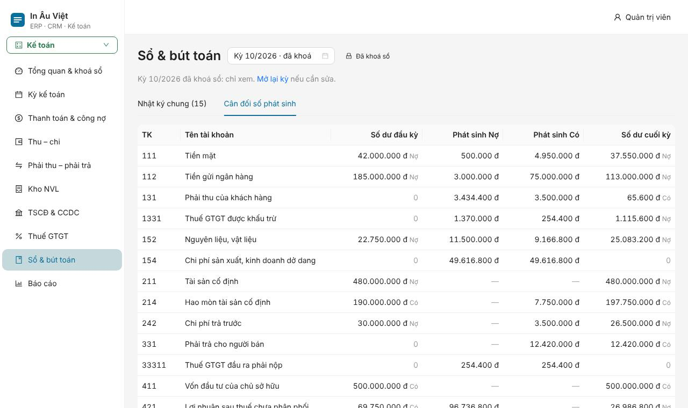
Mỗi tài khoản có số dư đầu kỳ, phát sinh Nợ, phát sinh Có và số dư cuối kỳ (ghi rõ dư Nợ hay dư Có). Dòng tổng: tổng phát sinh Nợ luôn bằng tổng phát sinh Có.
Khoá sổ cuối tháng
Đầu mỗi tháng, kế toán trưởng chạy lần lượt 5 bước cho tháng trước rồi khoá sổ. Khoá xong, số dư và tồn kho tự chuyển sang tháng sau.
Trước khi khoá: kiểm tra
- Đã nhập đủ phiếu chi, phiếu nhập, phiếu xuất của tháng.
- Các đơn đã nghiệm thu trong tháng đều có phiếu xuất vật tư (xem cảnh báo trên trang Tổng quan).
- Tài sản mua mới trong tháng đã được thêm.
- Kỳ trước đã khoá sổ, số dư đầu kỳ cân.
Chạy 5 bước
- Tính giá xuất kho bình quân: tính lại giá các phiếu xuất theo bình quân cả tháng, và ghi giá vốn (Nợ 632 / Có 154) cho các đơn nghiệm thu trong tháng.
- Khấu hao TSCĐ: ghi khấu hao tháng của tài sản cố định (Có 214).
- Phân bổ công cụ dụng cụ: ghi phân bổ tháng (Có 242).
- Khấu trừ thuế GTGT: trừ thuế đầu vào vào thuế đầu ra (Nợ 33311 / Có 1331), lấy số nhỏ hơn.
- Kết chuyển lãi lỗ: đưa chi phí sản xuất chung vào giá vốn, doanh thu và chi phí vào 911, lãi hoặc lỗ vào 421.
Bấm Chạy ở bước đang sáng. Chạy xong bước nào sẽ có dấu ✓ và số liệu của bước đó.
Khoá sổ
- Đủ 5 bước thì nút Khoá sổ kỳ MM/YYYY sáng lên. Bấm nút.
- Đọc thông báo, bấm Khoá sổ để xác nhận.
Sau khi khoá: kỳ chuyển sang “Đã khoá sổ”, kết quả kinh doanh được lưu, số dư cuối kỳ và tồn kho (số lượng, đơn giá bình quân) thành số đầu kỳ của tháng sau.
Kỳ kế toán và mở lại kỳ
Danh sách các tháng đã ghi sổ, kết quả từng tháng, ai khoá và lúc nào. Kỳ đã khoá có thể mở lại khi cần sửa.
- Mỗi dòng: kỳ, trạng thái, số bước cuối kỳ đã chạy, doanh thu, lợi nhuận (tạm tính nếu chưa khoá), người khoá và thời điểm.
- Bấm vào tên kỳ để mở Tổng quan của kỳ đó.
- Thẻ Nhật ký khoá sổ ghi mọi thao tác: chạy bước, đặt lại bước, khoá, mở lại, sửa bút toán.
Mở lại một kỳ đã khoá
- Bấm Mở lại kỳ ở kỳ đã khoá gần nhất.
- Ghi lý do (bắt buộc), bấm Mở lại kỳ.
- Sửa chứng từ cần sửa, rồi chạy lại 5 bước và khoá sổ lại.
Công nợ, thuế GTGT và báo cáo
Ba màn hình chỉ để xem, giúp trả lời: ai còn nợ mình, mình còn nợ ai, tháng này nộp bao nhiêu thuế và lãi hay lỗ.
Phải thu – phải trả

- Phải thu khách (131): còn nợ (gồm 8% VAT), trả trước (tiền cọc), nợ từ ngày nào; nhãn đỏ quá 30 ngày.
- Phải trả nhà cung cấp (331): mua chịu, đã trả, còn phải trả.
- Dòng “Số dư đầu kỳ chưa phân theo khách / nhà cung cấp” là phần công nợ nhập ở số dư đầu kỳ.
Thuế GTGT
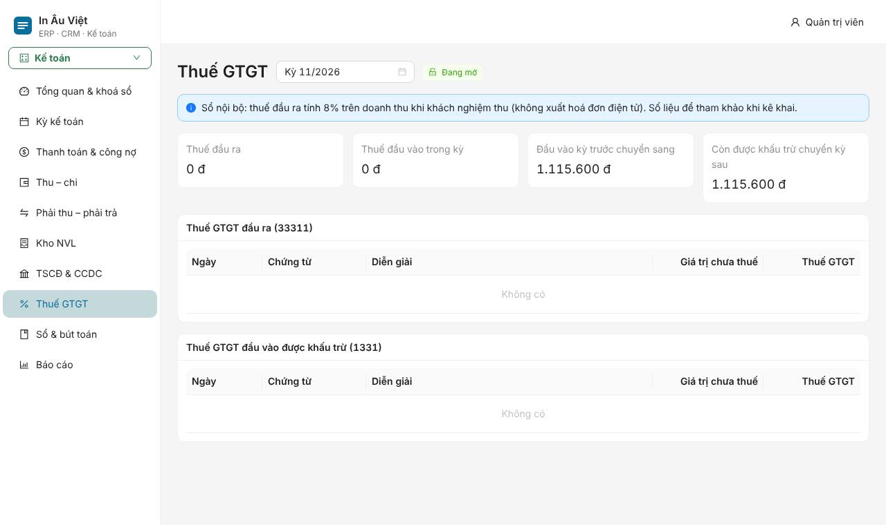
- Thuế đầu ra: 8% trên doanh thu các đơn nghiệm thu trong kỳ.
- Thuế đầu vào: từ phiếu nhập, phiếu chi, mua tài sản có thuế.
- Phải nộp = đầu ra − đầu vào − đầu vào kỳ trước chuyển sang. Nếu âm thì là số còn được khấu trừ chuyển kỳ sau.
Báo cáo

- Kết quả kinh doanh: doanh thu, giá vốn (gồm chi phí sản xuất chung), chi phí bán hàng, chi phí quản lý, thu nhập / chi phí khác, lợi nhuận trước thuế. Kỳ chưa khoá có nhãn tạm.
- Sổ cái tài khoản: chọn một tài khoản để xem số dư đầu kỳ, từng phát sinh kèm tài khoản đối ứng và số dư sau mỗi dòng.
Phân hệ Kho dùng để làm gì
Kho quản lý nhiều kho riêng: kho giấy, kho vật tư xưởng bạt, kho tồn offset, kho khuôn… Mỗi kho có thủ kho riêng. Phiếu nhập, xuất, chuyển kho chỉ làm thay đổi tồn khi thủ kho của kho đó xác nhận.

Các khái niệm
| Khái niệm | Nghĩa |
|---|---|
| Kho | Tạo trên phần mềm, thêm bớt được (Danh mục kho → Kho). Có mã (GIAY, BAT…) dùng trong số phiếu, và danh sách thủ kho. |
| Vật tư | Một danh mục chung cho mọi kho. Mỗi vật tư chọn các kho có nó: decal có thể ở cả kho bạt lẫn kho giấy. |
| Quy cách | Khổ của vật tư: giấy 79 × 109, cuộn bạt khổ 320. Mỗi quy cách có tồn riêng ở từng kho. |
| Đơn vị tính | Đơn vị cơ sở (tờ, m, kg…) là đơn vị tồn được lưu. Thêm đơn vị khác có hệ số: 1 ram = 500 tờ; riêng khổ bìa dày 1 ram = 250 tờ; 1 cuộn = 50 m. |
| Thủ kho | Người xác nhận phiếu của kho mình. Kho chưa có thủ kho thì ai có quyền lập phiếu cũng xác nhận được. |
Các menu
| Menu | Dùng để |
|---|---|
| Phiếu đang chờ bạn xác nhận, hàng đang chuyển giữa các kho, khuôn quá hẹn, vật tư sắp hết. | |
| Chọn kho ở trên cùng. Tồn từng quy cách, thẻ kho, lập phiếu nhập / xuất / nhập lại / chuyển kho, xác nhận phiếu. | |
| , | Kho khuôn: hồ sơ từng khuôn, xuất / nhận khuôn với xưởng. |
| Nhập – xuất – tồn theo khoảng ngày, tồn cuối một ngày bất kỳ, sổ phiếu theo ngày. | |
| Kho và thủ kho, vật tư (quy cách, đơn vị, kho có vật tư), đối tác, vị trí kệ, ký hiệu khuôn, nhập bảng khuôn Excel. |
Ai làm được gì
| Quyền / vai trò | Làm được |
|---|---|
| Xem kho | Xem tồn, phiếu, khuôn, báo cáo |
| Lập phiếu kho | Lập phiếu ở mọi kho (phiếu chờ thủ kho xác nhận); huỷ phiếu mình lập khi chưa xác nhận |
| Thủ kho của một kho | Xác nhận / từ chối phiếu của kho đó; huỷ phiếu đã xác nhận |
| Quản lý khuôn | Tạo, sửa khuôn; lập phiếu giao nhận khuôn |
| Quản lý kho | Thêm / sửa kho và thủ kho, danh mục vật tư, nhập bảng khuôn và bảng tồn giấy Excel |
Bắt đầu dùng kho
Làm một lần khi mới đưa phần mềm vào dùng, theo thứ tự dưới đây. Cần quyền Quản lý kho.
1. Kho và thủ kho
Phần mềm có sẵn 5 kho: Kho giấy (GIAY), Kho vật tư xưởng bạt (BAT), Kho tồn offset (OFFSET) quản lý vật tư theo số lượng; Kho khuôn Âu Việt (KHUON) và Kho Xuân Đỉnh (XUANDINH) quản lý từng khuôn. Thẻ Kho: bấm ✎ để sửa tên, địa chỉ và chọn thủ kho; bấm Thêm kho để tạo kho mới.
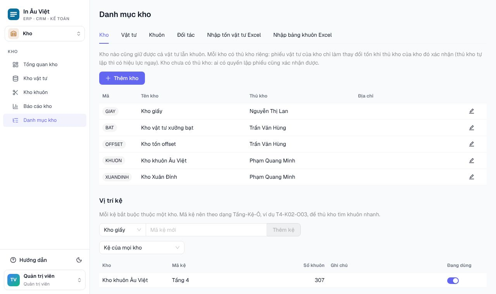
2. Vật tư, quy cách, đơn vị tính
- Thẻ Vật tư → Thêm vật tư. Ghi mã (không bắt buộc), nhóm (DC, GN, Op, Bạt, Mực…), tên và đơn vị cơ sở (tờ, m, kg…). Tồn luôn lưu theo đơn vị cơ sở.
- Có ở kho: chọn các kho giữ vật tư này.
- Quy cách: giấy ghi rộng × dài; cuộn (bạt, decal cuộn) chỉ ghi khổ rộng. Vật tư không theo khổ (keo, mực) thì tắt Có quy cách / khổ.
- Đơn vị tính khác: ghi 1 ram = 500 tờ. Nếu một khổ đóng gói khác, thêm một dòng cùng tên và chọn khổ đó ở ô cuối (ví dụ 1 ram = 250 tờ chỉ cho 79 × 109). Bấm Lưu.

3. Mức tối thiểu
Ở , cột Tối thiểu, bấm ✎ để đặt mức nhắc cho từng quy cách tại kho đó.
4. Đối tác, vị trí kệ, ký hiệu khuôn, bảng khuôn Excel
Xưởng bế (Mê Linh, A.Kiên Trương Định, Em Hòa, Khoa Nhật Minh…), nơi làm khuôn, nhà cung cấp ở thẻ Đối tác. Phiếu giao nhận khuôn chỉ chọn nơi đến trong danh sách này hoặc các kho, nên xưởng mới thì thêm ở đây trước. Kệ ở Vị trí kệ: mỗi kệ thuộc một kho khuôn. Ký hiệu khuôn (TUI, HOP, KEF…) ở Ký hiệu khuôn; nhập bảng khuôn ở Nhập bảng khuôn Excel.
5. Tồn đầu
Số tồn ban đầu của một kho vào bằng phiếu nhập kho (hoặc, với Kho giấy, nhập thẳng từ bảng tồn như dưới đây). Phiếu chỉ làm đổi tồn khi thủ kho xác nhận.
Kho giấy có sẵn bảng tồn trên Google Sheets thì nhập thẳng:
- Mở bảng “THEO DÕI GIẤY TỒN” → Tệp → Tải xuống → Microsoft Excel (.xlsx).
- Danh mục kho → Nhập tồn giấy Excel, kéo file vào, bấm Xem trước: phần mềm đọc sheet có cột Mã VT, Loại giấy, Khổ giấy, TỒN và cho biết sẽ tạo bao nhiêu vật tư, quy cách, tổng số tờ.
- Bấm Nhập. Phần mềm tạo vật tư (đơn vị tờ, nhóm theo Mã VT: DC → Đề can, GN → Giấy ngoại, C150… → Couche), quy cách theo khổ, và một phiếu điều chỉnh “Tồn đầu” (số DC-GIAY-…) ghi sẵn số tồn trong bảng, ở trạng thái chờ xác nhận.
- Thủ kho Kho giấy vào Tồn kho & phiếu → Chờ xác nhận, mở phiếu đó, đối chiếu rồi bấm Xác nhận. Xác nhận xong số đó mới thành tồn. Sai nhiều thì Từ chối, sửa bảng và nhập lại.
Nhập lại bảng mới (đếm lại, thêm giấy mới): làm y như trên. Bảng xem trước có thêm cột Đang có (tồn trên phần mềm) và Chênh. Phiếu theo bảng của lần trước nếu còn chờ xác nhận sẽ được huỷ và thay bằng phiếu mới; nếu đã xác nhận thì phiếu mới (“Điều chỉnh theo bảng tồn giấy”) chỉ ghi phần chênh. Xác nhận xong, tồn từng khổ giấy đúng bằng cột TỒN trong bảng. Dòng “chưa đếm” chỉ tạo quy cách, không đổi tồn.

Tồn kho, phiếu và thủ kho xác nhận
Chọn kho ở đầu trang rồi làm việc với kho đó. Phiếu lập xong ở trạng thái chờ xác nhận; tồn chỉ thay đổi khi thủ kho của kho xác nhận.

Xem tồn
- Chọn kho bằng các nút ở trên cùng (số đỏ trên nút = phiếu đang chờ bạn xác nhận).
- Gõ mã, tên hoặc khổ vào ô tìm; lọc theo nhóm; chọn Dưới tối thiểu; Xuất CSV.
- Cột Chờ xuất: số đang nằm trong phiếu xuất / chuyển đi chưa xác nhận.
- Bấm vào một dòng để xem thẻ kho của quy cách đó tại kho đang chọn.
Các loại phiếu
| Nút | Khi nào | Số phiếu |
|---|---|---|
| Nhập kho | Hàng mua về. Ghi nhà cung cấp, hoá đơn, đơn giá (theo đơn vị đã chọn). | NK-mã kho- |
| Xuất kho | Đưa ra xưởng. Bắt buộc ghi người nhận; nên ghi mục đích, lệnh. | XK-mã kho- |
| Nhập lại | Dùng thừa, trả lại kho. | NL-mã kho- |
| Chuyển kho | Chuyển sang kho khác, xem Chuyển kho. | CK-mã kho- |
Lập phiếu
- Bấm nút loại phiếu. Chọn ngày, người nhận / nhà cung cấp, lệnh.
- Mỗi dòng: chọn vật tư · quy cách, gõ số lượng, chọn đơn vị (tờ, ram…). Phần mềm hiện số quy đổi, ví dụ “= 250 tờ”.
- Nếu bạn là thủ kho của kho này, ô Tôi là thủ kho, xác nhận luôn đã được tích: lưu là tồn đổi ngay. Người khác lập thì phiếu chờ thủ kho.
- Bấm Lưu phiếu.

Thủ kho xác nhận
- Thẻ Chờ xác nhận (hoặc ô “Phiếu chờ bạn xác nhận” ở Tổng quan kho) liệt kê phiếu đang chờ.
- Bấm vào phiếu, kiểm hàng thực tế với phiếu.
- Đúng thì bấm Xác nhận: tồn thay đổi, phiếu ghi tên thủ kho và giờ xác nhận. Sai thì bấm Từ chối và ghi lý do.
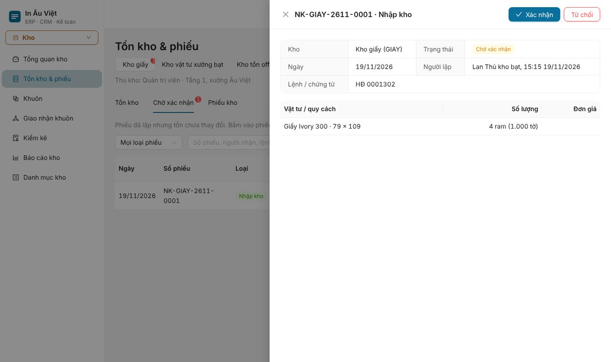
Huỷ phiếu
- Phiếu chưa xác nhận: người lập (hoặc thủ kho) bấm Huỷ phiếu. Tồn không đổi.
- Phiếu đã xác nhận: chỉ thủ kho huỷ được, ghi lý do; tồn được trả lại như trước. Không huỷ được nếu làm tồn âm.
Chuyển kho A → B
Chuyển vật tư giữa hai kho, ví dụ decal từ kho giấy sang xưởng bạt. Một phiếu chuyển gồm hai phiếu liên kết: phiếu đi ở kho A và phiếu đến ở kho B.
- Chọn kho đi ở đầu trang, bấm Chuyển kho.
- Chọn kho nhận, ghi người mang, lý do; chọn vật tư, số lượng, đơn vị. Kho nhận chưa có vật tư thì phần mềm tự thêm vào.
- Thủ kho kho đi tích xác nhận xuất luôn (hoặc xác nhận sau ở thẻ Chờ xác nhận).
- Thủ kho kho nhận thấy phiếu ở thẻ Chờ xác nhận của kho mình, kiểm hàng rồi bấm Xác nhận đã nhận.
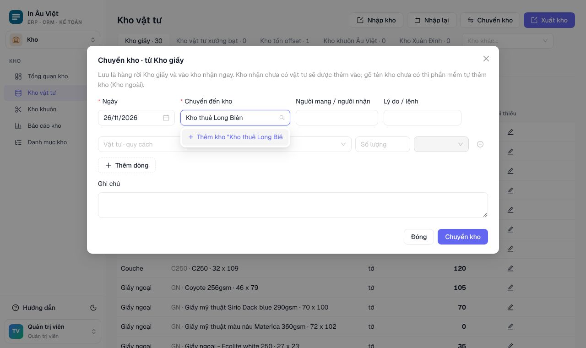
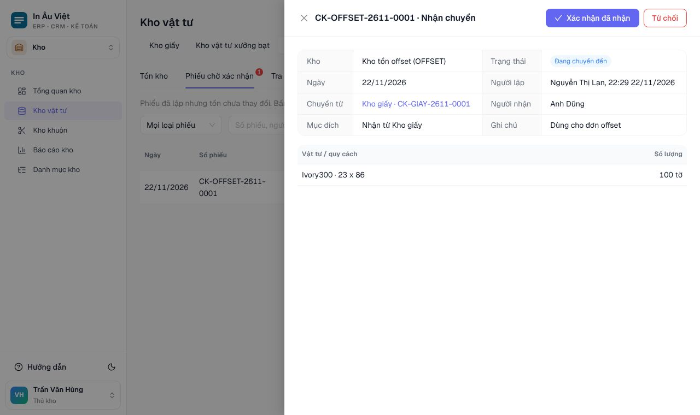
- Kho nhận không xác nhận được khi kho đi chưa xác nhận xuất.
- Trước khi kho đi xác nhận: một trong hai thủ kho từ chối, hoặc người lập huỷ, thì cả hai phiếu cùng đóng.
- Sau khi hàng đã rời kho đi: chỉ thủ kho kho đi huỷ được phiếu chuyển; phần mềm trả hàng về kho đi (và lấy ra khỏi kho nhận nếu đã nhận).
- Hàng đang chuyển hiện ở ô Hàng đang chuyển giữa các kho trên Tổng quan kho.
Báo cáo kho và tồn theo ngày
Mọi phiếu đều được lưu lại. Báo cáo tính từ các phiếu đã được thủ kho xác nhận, theo ngày ghi trên phiếu. Cuối mỗi ngày phần mềm tự lưu một bản chụp tồn của từng kho.
Nhập – xuất – tồn
Chọn kho và khoảng ngày: mỗi quy cách có tồn đầu, tổng nhập, tổng xuất, tồn cuối. Nhập gồm nhập kho, nhập lại, nhận chuyển, điều chỉnh tăng; xuất gồm xuất kho, chuyển đi, điều chỉnh giảm. Chọn Có phát sinh để chỉ xem dòng có nhập / xuất. Xuất CSV để mở bằng Excel.

Tồn theo ngày
Chọn một ngày: phần mềm hiện tồn cuối ngày đó của từng quy cách.
- Bản chụp: sau khi hết ngày, phần mềm tự lưu tồn cuối ngày (chạy mỗi giờ, ngày nào chưa có thì chụp bù). Bản chụp không đổi về sau.
- Tính lại từ phiếu: cột bên cạnh tính lại từ phiếu hiện có. Nếu có người lập bổ sung phiếu về ngày cũ, cột này khác bản chụp và được tô màu cam.
- Ngày chưa có bản chụp (ví dụ hôm nay) thì hiện số tính từ phiếu.
- Quản lý kho có nút Chụp các ngày còn thiếu để chụp ngay mà không chờ.

Sổ phiếu theo ngày
Mọi phiếu của kho trong khoảng ngày: loại, trạng thái, vật tư, người lập, thủ kho xác nhận và giờ xác nhận. Xuất CSV được, mỗi dòng vật tư một dòng.
Danh sách khuôn và tìm khuôn
Mỗi khuôn có một mã cố định, một trạng thái (sẵn sàng, đang bế, chờ kiểm…) và một nơi: kệ nào ở kho nào (Kho khuôn Âu Việt, Kho Xuân Đỉnh), hoặc đang ở xưởng nào.

Trạng thái khuôn
| Trạng thái | Nghĩa |
|---|---|
| Sẵn sàng | Dùng được ngay. Nằm trên kệ, hoặc xưởng đang giữ cho lần sau. |
| Đang bế | Đang ở xưởng, chạy cho một lệnh. |
| Chờ kiểm | Vừa từ xưởng về kho, chưa kiểm dao. |
| Đang chuyển | Kho đi đã xác nhận xuất, kho nhận chưa xác nhận đã nhận. |
| Khuôn mới, chờ nhận | Khuôn vừa đặt làm, chờ thủ kho xác nhận đã nhận (hoặc đã giao tới xưởng). |
| Lỗi / Hỏng | Dao mẻ, cong, gãy. Lỗi thì gửi sửa được. |
| Đang sửa | Đang ở nơi sửa khuôn. |
| Đã thanh lý | Không dùng nữa, ẩn khỏi danh sách (lọc trạng thái để xem). |
Tìm khuôn
- Một ô tìm cho cả tên, mã, khách và kích thước. Gõ không dấu cũng được.
- Gõ kích thước dạng
24x24x12.5(dấu chấm hay phẩy đều được): phần mềm tìm khuôn lệch trong ± 0,5 cm mỗi chiều, không cần đúng thứ tự dài – rộng – cao. - Hàng nút trên cùng lọc theo nơi: Tất cả, từng kho, từng xưởng, Đang chuyển / chờ nhận. Cột Ở đâu ghi rõ kho và kệ, hoặc tên xưởng, hoặc “A → B” khi đang chuyển.
- Lọc thêm Ký hiệu, Trạng thái, Cần chú ý (quá hẹn, cần xác nhận, đang ở xưởng ngoài). Xuất CSV lưu danh sách đang lọc.

Hồ sơ khuôn
Bấm vào một khuôn để mở hồ sơ: thông tin, ảnh, các nút làm được ở nơi và trạng thái hiện tại, phiếu đang chờ (nếu có), khuôn gần giống kích thước, và lịch sử mọi lần lập phiếu, xuất, nhận, bế, kiểm.

- Thêm ảnh: chụp khuôn bằng điện thoại và tải lên để dễ nhận ra.
- Sửa thông tin: sửa tên, kích thước, số mảnh, khách… Mã khuôn không đổi được.
- Khuôn có khung vàng Cần xác nhận: kiểm tra thực tế, sửa nếu sai, rồi bấm Đã kiểm, đúng.
Tạo khuôn mới
- Bấm Khuôn mới, chọn ký hiệu. Phần mềm cho biết mã sẽ cấp (ví dụ
TUI-355). - Gõ tên khuôn, khách, dài / rộng / cao, dọc hay ngang, số mảnh, nơi làm khuôn, giá.
- Khuôn làm xong giao tới đâu? (bắt buộc): chọn một kho (kèm kệ cất nếu biết) hoặc giao thẳng tới một xưởng bế (kèm lệnh nếu có).
- Bấm Tạo khuôn. Khuôn ở trạng thái Khuôn mới, chờ nhận cho tới khi thủ kho xác nhận: nhập kho thì thủ kho kho đó xác nhận đã nhận; giao thẳng tới xưởng thì thủ kho kho khuôn xác nhận đã giao. Nếu bạn là thủ kho đó và khuôn đã về, tích ô xác nhận luôn.

Khuôn đi đâu: giao nhận và thủ kho xác nhận
Khuôn đổi nơi (kho ↔ xưởng, kho ↔ kho, xưởng ↔ xưởng) thì lập phiếu giao nhận (số GN-), luôn có nơi đến, và thủ kho xác nhận. Việc làm tại chỗ (bế lệnh mới ở xưởng đang giữ khuôn, kiểm đạt, đổi kệ) thì bấm nút trong hồ sơ khuôn, không cần phiếu.
Ai xác nhận
| Từ → Đến | Xác nhận | Khuôn sau đó |
|---|---|---|
| Kho → xưởng | Thủ kho kho đi xác nhận xuất | Ở xưởng: Đang bế nếu có lệnh, Sẵn sàng (xưởng giữ) nếu không, Đang sửa nếu là khuôn lỗi gửi sửa |
| Xưởng → kho | Thủ kho kho nhận xác nhận đã nhận khi khuôn về | Ở kho, Chờ kiểm |
| Kho Âu Việt ↔ Kho Xuân Đỉnh | Kho đi xác nhận xuất, rồi kho nhận xác nhận đã nhận | Đang chuyển giữa hai bước, rồi ở kho nhận |
| Xưởng → xưởng | Thủ kho kho quản lý khuôn xác nhận thay | Ở xưởng mới |
Phiếu chờ xác nhận thì khuôn chưa đổi nơi. Thủ kho có thể từ chối (ghi lý do), người lập có thể huỷ, trước khi khuôn rời nơi đi; khuôn ở nguyên chỗ cũ. Một khuôn chỉ nằm trong một phiếu đang chờ.
Từ hồ sơ khuôn
| Khuôn đang ở | Nút |
|---|---|
| Kho, sẵn sàng | Xuất đi bế (tới xưởng), Chuyển kho, Đổi kệ |
| Kho, chờ kiểm / lỗi | Kiểm đạt, lên kệ (thủ kho), Gửi đi sửa, Báo lỗi / hỏng |
| Xưởng | Bế lệnh mới tại đây (ghi lệnh mới, không cần phiếu), Bế xong, xưởng giữ, Chuyển sang xưởng khác, Nhập về kho |
Các nút đổi nơi mở sẵn phiếu giao nhận với khuôn đó; chỉ cần chọn nơi đến.

Phiếu giao nhận khuôn
Lập một phiếu cho nhiều khuôn cùng đi một chuyến. Phiếu có số GN-, in ra để hai bên ký.
Lập phiếu
- Bấm Lập phiếu giao nhận. Chọn Từ (một kho hoặc một xưởng) và Đến (bắt buộc). Ghi lệnh nếu có, ngày hẹn lấy lại nếu tới xưởng.
- Tích các khuôn đang ở nơi đi (lọc được theo tên, mã, kích thước).
- Khuôn có trong kho mà chưa có mã: bấm Khuôn có trong kho nhưng chưa có mã, chọn ký hiệu, ghi tên và kích thước. Mã cấp tự động khi lưu; khuôn được gắn “Cần xác nhận” để bổ sung thông tin sau.
- Nếu bạn là thủ kho kho đi, tích xác nhận xuất luôn. Bấm Lập phiếu.
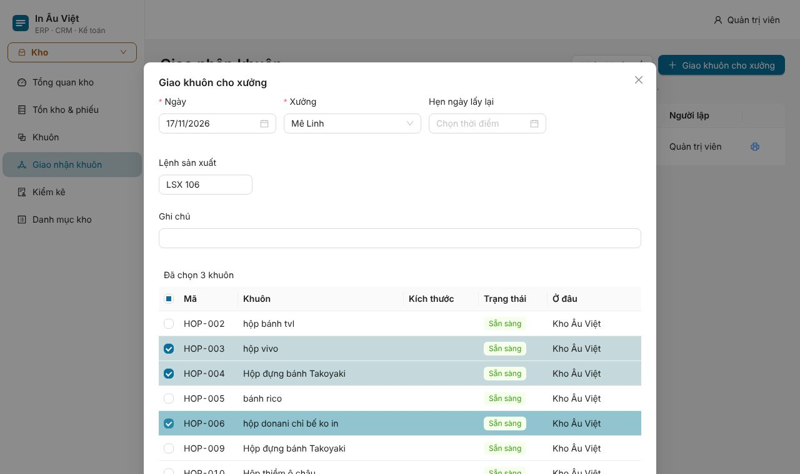
Thủ kho xác nhận
Thẻ Chờ bạn xác nhận (và Tổng quan kho) liệt kê các phiếu đang chờ đúng bạn. Mở phiếu, kiểm khuôn thực tế, bấm Xác nhận xuất hoặc chọn kệ rồi Xác nhận đã nhận. Sai thì Từ chối và ghi lý do.
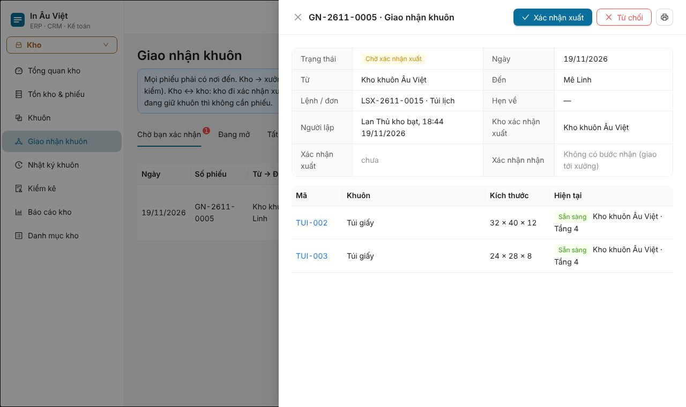

Nhật ký khuôn
Tra lại mọi thao tác với khuôn trong một ngày hoặc khoảng ngày: đã lập phiếu, xuất, nhận, chuyển đi đâu, ai làm, ai xác nhận. Dùng để kiểm tra lại các giao dịch đã chọn đúng chưa.
- Chọn khoảng ngày (hoặc bấm Hôm nay, Hôm qua, Tháng này). Muốn xem đúng ngày 10/11 thì chọn từ 10/11 đến 10/11.
- Lọc thêm theo thao tác, nơi (kho hoặc xưởng, khớp nơi đi hoặc nơi đến) và người làm.
- Bấm mã khuôn để mở hồ sơ khuôn, bấm số phiếu để xem phiếu. Chọn sai thì sửa từ đó (từ chối / huỷ phiếu chưa xuất, hoặc lập phiếu mới đưa khuôn về đúng nơi).
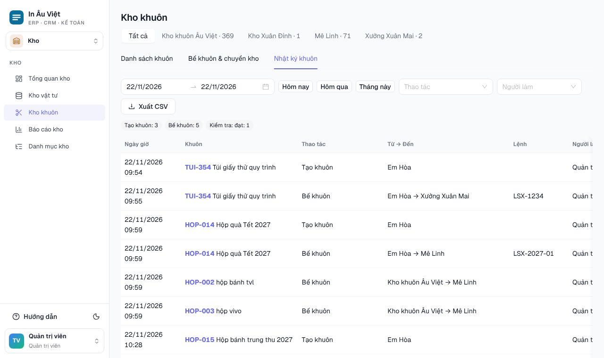
Nhập bảng khuôn Excel
Đưa file Excel quản lý khuôn đang dùng vào phần mềm, giữ nguyên mã khuôn cũ. Làm một lần lúc bắt đầu; chạy lại cũng không tạo trùng.
- Kéo file
.xlsxvào ô, hoặc bấm để chọn. File cần có sheet DANH_SACH_KHUON (dòng tiêu đề bắt đầu bằng “Mã khuôn”); sheet NHAP_LIEU nếu có sẽ được giữ làm lịch sử. - Bấm Xem trước. Phần mềm chưa ghi gì, chỉ cho biết sẽ nhập bao nhiêu khuôn, trạng thái, đối tác và kệ sẽ tạo, và các điểm cần xem.
- Đọc danh sách điểm cần xem. Nếu sai nhiều, sửa file Excel rồi xem trước lại.
- Bấm Nhập → xác nhận.
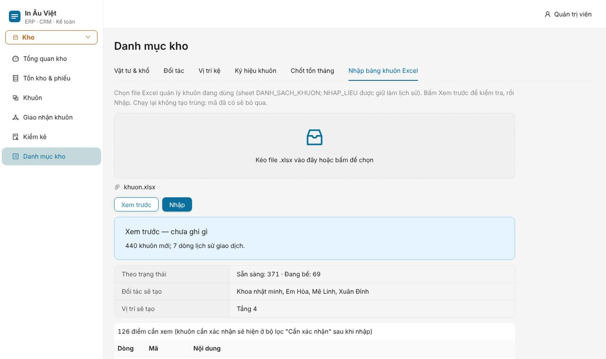
Phần mềm hiểu file thế nào
| Trong Excel | Trong phần mềm |
|---|---|
| TRONG KHO | Sẵn sàng, ở Kho khuôn Âu Việt, kệ theo cột “Vị trí kệ” |
| Nơi ghi “Xuân Đỉnh” | Ở Kho Xuân Đỉnh (kho của Âu Việt, không phải xưởng) |
| ĐANG SẢN XUẤT + nơi bế | Đang bế ở xưởng đó, ngày hẹn theo cột “Ngày dự kiến lấy lại” |
| Trạng thái khác (CHƯA XÁC NHẬN…) | Sẵn sàng ở kho, gắn Cần xác nhận |
| Kích thước “32x24x8”, “35x35x12c”, “Túi lịch 65x43” | Dài / rộng / cao để tìm theo số |
| Kích thước chỉ ghi chữ (“38 cm”, hai khuôn ghép) | Giữ nguyên chữ, không tìm theo số được |
| NOTE 1, NOTE 2 (Dọc / Ngang, “2 mảnh”, “8 bát/1 khuôn”) | Dọc / ngang, số mảnh, số SP trên khuôn; còn lại vào ghi chú |
| Nơi ra khuôn lặp lại từ 3 dòng | Đối tác “Nơi làm khuôn”; tên chỉ xuất hiện 1–2 lần thì vào ghi chú |
| Các dòng XUẤT / NHẬP ở NHAP_LIEU | Lịch sử của khuôn |
Khuôn được gắn Cần xác nhận khi: trùng kích thước với khuôn khác cùng ký hiệu, ra xưởng hơn 45 ngày, trạng thái không rõ, nơi bế “Khác”, hoặc không có dòng TẠO KHUÔN. Sau khi nhập, vào → lọc Cần xác nhận và rà dần.
Tài khoản người dùng
Quản trị viên tạo tài khoản cho từng nhân viên, chọn nhóm quyền, đặt lại mật khẩu và khoá tài khoản khi nhân viên nghỉ.
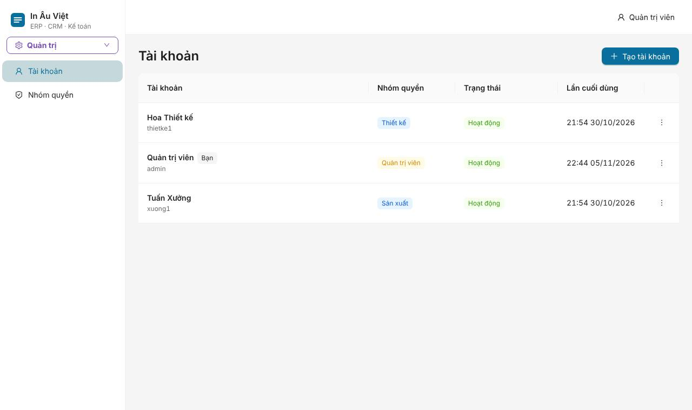
Tạo tài khoản
- Bấm Tạo tài khoản.
- Nhập Họ tên, Tên đăng nhập (3–32 ký tự: chữ thường không dấu, số, dấu chấm, gạch ngang; ví dụ
lan.nguyen). - Chọn Nhóm quyền. Email, điện thoại không bắt buộc.
- Mật khẩu ban đầu: chọn Tạo mật khẩu tạm ngẫu nhiên (khuyên dùng) hoặc tự nhập (ít nhất 8 ký tự). Bấm Lưu.
- Mật khẩu tạm chỉ hiện một lần: bấm Chép và gửi cho nhân viên qua Zalo hoặc nói trực tiếp. Lần đầu đăng nhập, nhân viên phải đổi mật khẩu.
Các thao tác khác
Bấm biểu tượng ⋯ ở cuối dòng tài khoản:
- Sửa thông tin, nhóm quyền.
- Đặt lại mật khẩu: khi nhân viên quên mật khẩu; tạo mật khẩu tạm mới.
- Đăng xuất mọi thiết bị: khi nghi lộ mật khẩu.
- Khoá tài khoản: người đó bị đăng xuất ngay và không đăng nhập được tới khi mở khoá. Dùng khi nhân viên nghỉ việc (không xoá tài khoản để giữ lịch sử).
Nhóm quyền
Nhóm quyền quy định một nhóm nhân viên được làm gì trong từng chức năng. Sửa nhóm thì mọi tài khoản trong nhóm đổi theo.
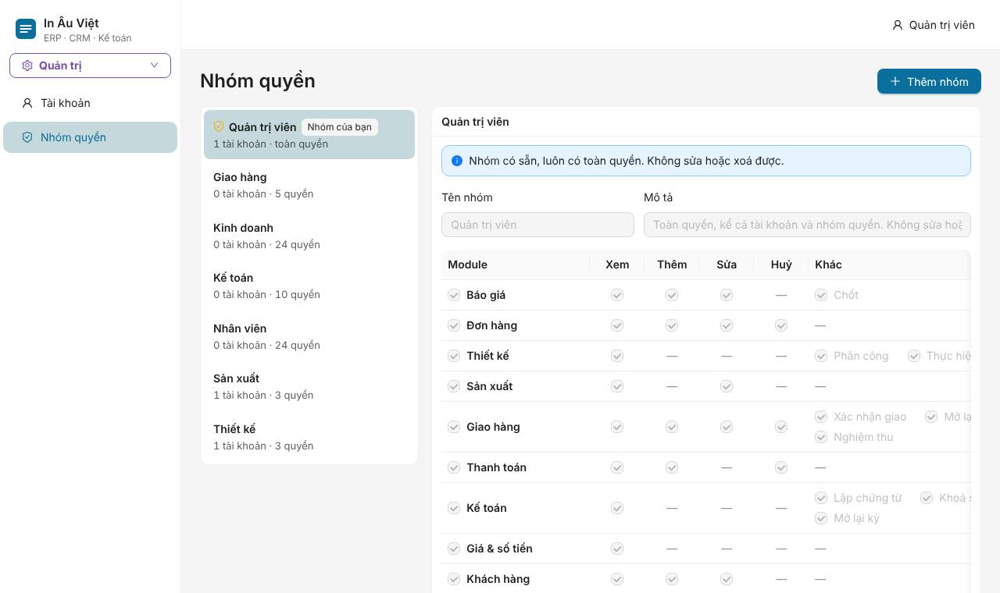
Sửa hoặc tạo nhóm
- Chọn một nhóm ở bên trái, hoặc bấm Thêm nhóm.
- Nhập tên và mô tả nhóm.
- Tích quyền trong bảng: mỗi hàng là một chức năng (báo giá, đơn hàng, thiết kế, sản xuất, giao hàng, thanh toán, kế toán, tiền, khách hàng, sản phẩm, tài khoản, nhóm quyền), mỗi cột là một thao tác (xem, thêm, sửa…).
- Bấm Lưu.
Một số quyền cần chú ý
| Quyền | Ý nghĩa |
|---|---|
| Tiền · xem | Thấy giá, tổng tiền, công nợ. Không có quyền này thì mọi số tiền bị ẩn. |
| Kế toán · xem | Xem phân hệ Kế toán (tự kèm quyền xem tiền). |
| Kế toán · ghi sổ | Lập phiếu nhập, xuất, chi, tài sản, bút toán khác; danh mục vật tư, nhà cung cấp. |
| Kế toán · khoá sổ | Bắt đầu sổ, số dư đầu kỳ, khoản mục chi phí, chạy 5 bước, khoá sổ, sửa bút toán tự động. |
| Kế toán · mở lại kỳ | Mở lại kỳ đã khoá. Nên chỉ cấp cho người có trách nhiệm. |
Chỉ xoá được nhóm khi không còn tài khoản nào dùng nhóm đó.
Kết nối fanpage Facebook
Đưa tin nhắn và bình luận của fanpage về màn hình Hội thoại. Làm một lần cho mỗi fanpage.
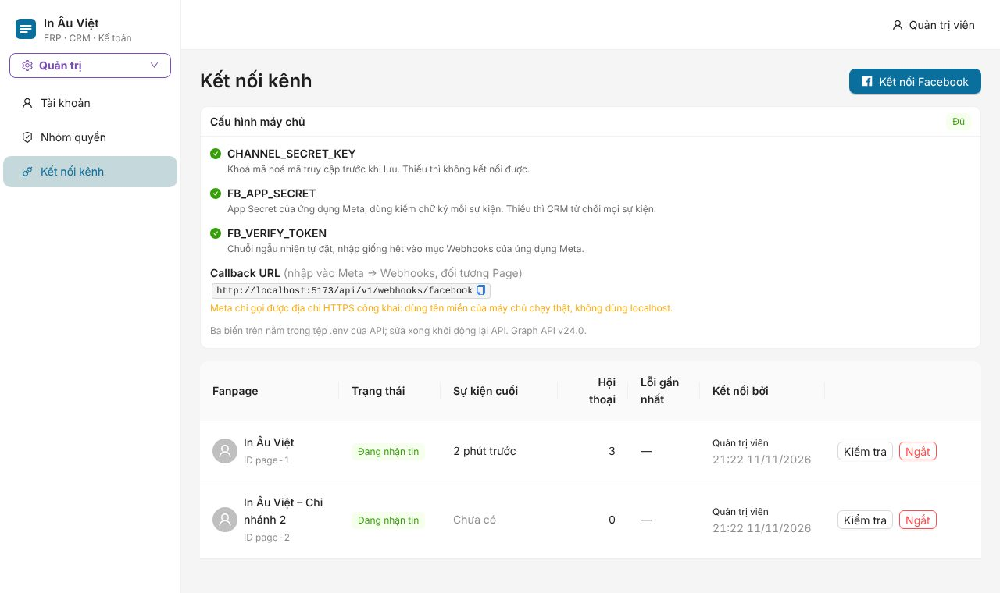
Trước khi kết nối
- Ô Cấu hình máy chủ phải có đủ ba dấu tích xanh. Thiếu mục nào, người cài đặt máy chủ thêm vào tệp cấu hình rồi khởi động lại.
- Ứng dụng Meta đã khai báo Callback URL (chép từ màn hình này) và mã xác minh; quyền đã được Meta duyệt thì mới nhận tin của khách thật.
- Có mã truy cập (access token) của người dùng hệ thống trong Business Manager, hạn “Không bao giờ”.
Kết nối
- Bấm Kết nối Facebook, dán mã truy cập, bấm Lấy danh sách fanpage.
- Tích các fanpage cần nối rồi bấm Kết nối.
- Mỗi fanpage hiện Đang nhận tin. Nhắn thử vào fanpage: cột Sự kiện cuối cập nhật và tin hiện ở CRM → Hội thoại.
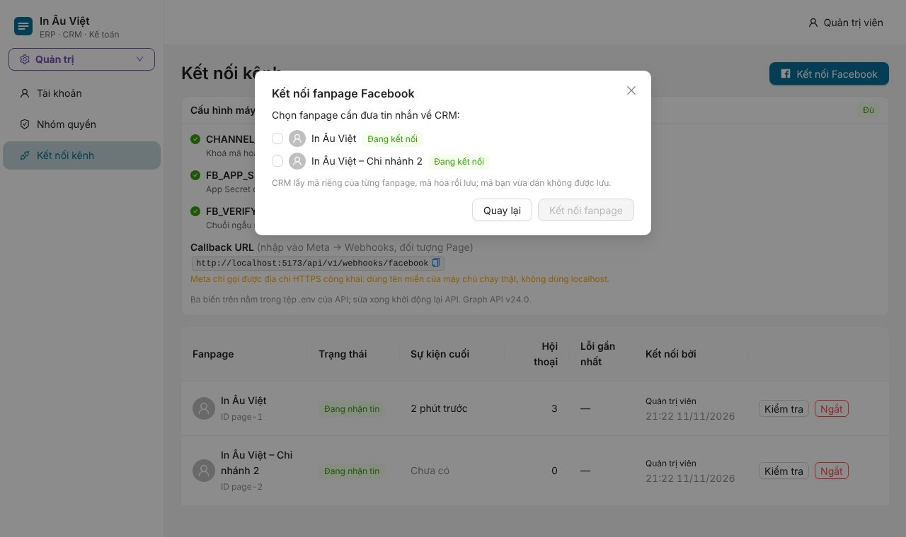
Khi có lỗi
- Lỗi + “Mã truy cập không còn hiệu lực”: tạo mã mới cho người dùng hệ thống rồi kết nối lại; xong bấm Kiểm tra.
- Thông báo đỏ “sự kiện không xử lý được”: CRM đã thử 5 lần. Sửa nguyên nhân (thường là mã truy cập) rồi bấm Chạy lại.
- Ngắt: dừng nhận tin của fanpage và xoá mã; hội thoại cũ vẫn giữ.
Việc hằng ngày theo vai trò
Danh sách việc ngắn gọn cho từng vị trí. In ra dán cạnh bàn làm việc trong những tuần đầu.
Kinh doanh
- Mở , xem đơn Quá hạn và Hạn trong 7 ngày.
- Lập báo giá mới, bấm Đã gửi khách sau khi gửi.
- Khách chốt → Khách chốt → tạo đơn; xác nhận đơn (cần thiết kế / có file sẵn).
- Ghi nhận tiền cọc, tiền khách trả ngay khi nhận.
- Xếp chuyến giao cho đơn đã sản xuất xong; ghi nghiệm thu khi khách ký.
Thiết kế
- Mở , bật Chỉ việc của tôi.
- Gửi maket xong → Đã gửi maket vN; có phản hồi → ghi yêu cầu sửa hoặc duyệt.
- Hoàn thiện file in → tích hoàn thiện → Khoá thiết kế.
Xưởng sản xuất
- Mở , làm lệnh GẤP và lệnh sắp tới hạn trước.
- Xong mỗi công đoạn bấm chuyển công đoạn; xong hết bấm Chuyển giao hàng.
Giao hàng
- Mở → thẻ Hôm nay.
- Giao xong mỗi chuyến bấm Giao xong, ghi số thực giao, người nhận, tiền thu tại chỗ.
Thủ kho
- Đầu ngày mở : xác nhận các phiếu chờ bạn xác nhận và hàng đang chuyển đến; gọi xưởng về các khuôn quá hẹn; kiểm các khuôn chờ kiểm; báo mua vật tư dưới tối thiểu.
- Vật tư vào / ra kho: lập phiếu nhập, xuất (ghi người nhận và lệnh), nhập lại ngay lúc giao nhận.
- Khuôn đi xưởng / về kho: ghi nhận trong hồ sơ khuôn, hoặc lập biên bản giao nhận khi nhiều khuôn.
- Rảnh: rà bộ lọc Cần xác nhận trong menu Khuôn.
- Cuối tháng: xem Báo cáo kho → Nhập – xuất – tồn của kho mình.
Kế toán
- Hằng ngày: lập phiếu chi, phiếu nhập; phiếu xuất vật tư cho các đơn đang sản xuất.
- Hằng tuần: xem Phải thu – phải trả, nhắc kinh doanh đòi nợ quá 30 ngày.
- Đầu tháng: kiểm tra, chạy 5 bước, khoá sổ tháng trước; xem báo cáo kết quả kinh doanh và thuế.
Thông báo lỗi thường gặp
Khi không làm được, phần mềm hiện thông báo màu đỏ ở đầu màn hình cho biết lý do. Dưới đây là các thông báo hay gặp và cách xử lý.
| Thông báo | Vì sao | Làm gì |
|---|---|---|
| Bạn không có quyền làm việc này | Nhóm quyền của bạn không có thao tác đó | Nhờ quản trị viên cấp thêm quyền |
| Phiên đăng nhập đã hết | Lâu không dùng hoặc bị đăng xuất từ xa | Đăng nhập lại |
| Số điện thoại này đã thuộc về một khách hàng khác | Khách đã có trong danh bạ | Tìm khách đó thay vì tạo mới |
| Số lượng lên chuyến vượt quá số lượng đặt | Tổng các chuyến lớn hơn số khách đặt | Giảm số lượng chuyến hoặc sửa hàng hoá của đơn |
| Chưa giao đủ hàng, chưa ký nghiệm thu được | Còn mặt hàng chưa giao | Giao nốt hoặc sửa số lượng đặt |
| Đơn đã nghiệm thu / hoàn thành, không huỷ hay sửa hạng mục được nữa | Doanh thu đã ghi sổ | Nếu thật sự cần, nhờ kế toán ghi bút toán điều chỉnh |
| Maket trước đang chờ khách phản hồi | Chưa ghi phản hồi bản trước | Ghi “yêu cầu sửa” hoặc “duyệt” trước |
| Kỳ kế toán của ngày chứng từ đã khoá sổ | Chọn ngày thuộc tháng đã khoá | Chọn ngày trong kỳ đang mở, hoặc mở lại kỳ |
| Kỳ trước chưa khoá sổ | Phải khoá theo thứ tự tháng | Khoá sổ tháng trước trước |
| Chạy các bước cuối kỳ theo đúng thứ tự | Bấm bước sau khi bước trước chưa chạy | Chạy từ bước đang sáng |
| Số dư đầu kỳ chưa cân | Tổng Dư Nợ khác tổng Dư Có | Sửa ở Kỳ kế toán → Số dư đầu kỳ |
| Bút toán chưa cân | Tổng Nợ khác tổng Có | Sửa số tiền các dòng cho bằng nhau |
| Không đủ tồn kho | Xuất nhiều hơn số đang có | Lập phiếu nhập trước hoặc giảm số xuất |
| Chỉ thủ kho của kho này mới làm được việc này | Bạn không phải thủ kho của kho đó | Chờ thủ kho xác nhận, hoặc nhờ quản lý kho thêm bạn làm thủ kho |
| Kho đi chưa xác nhận xuất | Kho nhận bấm nhận khi hàng chưa rời kho đi | Chờ thủ kho kho đi xác nhận xuất |
| Kho: Không đủ tồn kho … còn X, cần Y | Phiếu xuất nhiều hơn tồn của quy cách đó tại kho | Kiểm tra số; nếu hàng đã về thì lập phiếu nhập trước |
| Khuôn đang ở trạng thái không làm được thao tác này | Ví dụ xuất khuôn đang ở xưởng, kiểm khuôn chưa về | Xem trạng thái trong hồ sơ khuôn, làm bước đúng trước |
| Đã có khuôn cùng ký hiệu, kích thước gần giống | Có khuôn lệch dưới 0,5 cm | Xem khuôn đó có dùng lại được không; cần thì bấm “Vẫn tạo khuôn mới” |
| Huỷ phiếu này sẽ làm tồn kho âm | Hàng của phiếu nhập đã xuất bớt | Lập phiếu xuất cho phần chênh lệch thay vì huỷ |
| Tỷ lệ phân bổ phải cộng đủ 100% | Tổng % khoản mục khác 100 | Sửa tỷ lệ |
| Đã quá 7 ngày từ tin cuối của khách | Facebook không cho trang nhắn trước sau 7 ngày | Chờ khách nhắn lại, hoặc gọi điện |
| Đã nhắn riêng cho bình luận này rồi | Facebook chỉ cho nhắn riêng một lần | Trả lời công khai, mời khách nhắn tin cho trang |
| Fanpage đã ngắt kết nối | Quản trị viên đã ngắt hoặc mã hết hạn | Báo quản trị viên kết nối lại |
| Không kết nối được máy chủ | Mất mạng hoặc máy chủ đang tắt | Kiểm tra mạng, thử lại; báo quản trị viên nếu kéo dài |
Thuật ngữ
| Từ | Nghĩa |
|---|---|
| Maket | Bản thiết kế gửi khách xem trước khi in (v1, v2… là các lần gửi). |
| Lệnh sản xuất (LSX) | Phiếu giao việc cho xưởng, tạo khi khoá thiết kế hoặc khi khách có file sẵn. |
| Chuyến giao (GH) | Một lần mang hàng đi giao; một đơn có thể có nhiều chuyến. |
| Chưa lên chuyến | Số hàng của đơn chưa được xếp vào chuyến giao nào. |
| Nghiệm thu | Khách ký biên bản xác nhận đã nhận đủ hàng; đơn hoàn tất và ghi doanh thu. |
| Công nợ | Số tiền khách còn nợ (phải thu) hoặc mình còn nợ nhà cung cấp (phải trả). |
| Kỳ kế toán | Một tháng sổ sách. |
| Khoá sổ | Chốt số liệu một tháng; sau đó không ghi thêm chứng từ vào tháng đó. |
| Số dư đầu kỳ | Số dư các tài khoản tại ngày đầu tháng. |
| Bút toán / định khoản | Một nghiệp vụ ghi sổ gồm các dòng Nợ và Có bằng nhau. |
| Giá vốn | Chi phí làm ra hàng đã bán (vật tư + chi phí sản xuất chung). |
| Giá bình quân | Đơn giá vật tư tính trung bình theo cả tháng, dùng để tính giá xuất kho. |
| Khấu hao / phân bổ | Chia dần giá trị tài sản / công cụ vào chi phí từng tháng. |
| TSCĐ / CCDC | Tài sản cố định / công cụ dụng cụ. |
| VAT / thuế GTGT | Thuế giá trị gia tăng. Đầu ra: thu của khách; đầu vào: trả khi mua. |
| Khổ | Kích thước tờ giấy / cuộn màng (rộng × dài, cm). Mỗi khổ có tồn riêng. |
| Thẻ kho | Danh sách phiếu nhập, xuất của một khổ và số tồn sau mỗi phiếu. |
| Khuôn bế | Khuôn dao để bế (cắt) hộp, túi, tem. Mã dạng TUI-001, cấp một lần, không đổi. |
| Xưởng giữ | Khuôn bế xong để lại ở xưởng ngoài cho lần sau, vẫn sẵn sàng. |
| Mã chứng từ | KH (khách), NCC (nhà cung cấp), BG (báo giá), DH (đơn), LSX, GH, PT (phiếu thu), PN (nhập kho), PX (xuất kho), PC (phiếu chi), PKT (bút toán khác). Phân hệ Kho: NK (nhập kho), XK (xuất kho), NL (nhập lại), CK (chuyển kho), DC (điều chỉnh, ví dụ tồn đầu) kèm mã kho, ví dụ XK-GIAY-2611-0001; GN (giao nhận khuôn). Dạng DH-2611-0001 = đơn số 1 tháng 11/2026. |